79
23
102
102
00:31:15
| Title | Question | Expected | Actual | Explanation | Image SS | Skor | Status | Duration |
|---|---|---|---|---|---|---|---|---|
| Apa itu WABIS? | Apa itu WABIS? | WABIS (WhatsApp Business Solution) adalah layanan resmi WhatsApp yang dirancang untuk bisnis agar komunikasi lebih terstruktur. Dengan WABIS, Anda bisa mengirim pesan ke ribuan pelanggan sekaligus, membuat balasan otomatis, mengatur pesan dengan tim, dan memantau laporan penggunaan. Layanan ini sangat cocok untuk bisnis yang ingin menjaga komunikasi tetap cepat, profesional, dan efisien. Contoh: toko online bisa mengirim katalog produk baru ke ribuan pelanggan hanya dengan sekali klik. | WABIS atau WhatsApp Business Solution adalah layanan resmi dari WhatsApp yang dirancang khusus untuk bisnis. Dengan WABIS, Anda bisa mengatur komunikasi dengan lebih terstruktur, seperti mengirim pesan ke ribuan pelanggan sekaligus, membuat balasan otomatis, mengatur pesan bersama tim, dan memantau laporan penggunaan. Cocok banget buat bisnis yang pengen komunikasi cepat, profesional, dan efisien. Misalnya, toko online bisa kirim katalog produk baru ke banyak pelanggan hanya dengan sekali klik. | Auto: ✓ Jawaban sudah sangat baik dan lengkap. Semua informasi penting yang diharapkan sudah tercakup dengan akurat. |
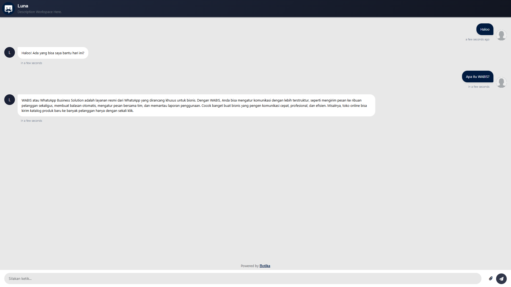 |
0.902 | PASS | 00:00:15 |
| Apa saja kelebihan menggunakan WABIS? | Apa saja kelebihan menggunakan WABIS? | WABIS memberikan banyak kelebihan dibanding WhatsApp biasa, seperti: 1. Efisiensi – pesan bisa dikirim massal. 2. Otomatisasi – tersedia template dan balasan otomatis. 3. Kolaborasi tim – multi-user untuk membagi tugas. 4. Analitik – laporan detail tentang pengiriman pesan. Semua ini membuat komunikasi dengan pelanggan lebih mudah dan terukur. Contoh: tim marketing bisa kirim promo massal | WABIS punya banyak kelebihan dibanding WhatsApp biasa, nih: 1. Efisiensi: Bisa kirim pesan massal, jadi hemat waktu. 2. Otomatisasi: Ada template dan balasan otomatis, memudahkan banget. 3. Kolaborasi Tim: Multi-user, jadi bisa bagi tugas dalam tim. 4. Analitik: Laporan detail tentang pengiriman pesan, bikin komunikasi lebih terukur. Semua ini bikin komunikasi dengan pelanggan jadi lebih mudah dan efektif. Contohnya, tim marketing bisa kirim promo massal dengan mudah. | Auto: ✓ Jawaban sudah cukup lengkap mencakup poin-poin utama. Bisa ditambahkan detail tentang memberikan, seperti untuk lebih komprehensif. |
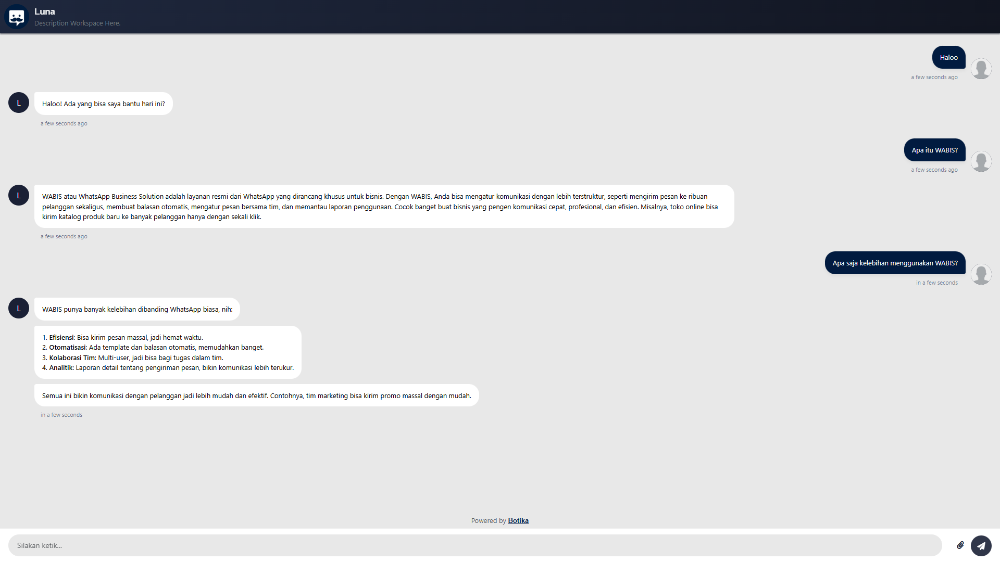 |
0.886 | PASS | 00:00:16 |
| Apakah WABIS bisa digunakan untuk broadcast pesan? | Apakah WABIS bisa digunakan untuk broadcast pesan? | Bisa. Fitur Broadcast di WABIS memungkinkan Anda mengirim pesan yang sama ke banyak pelanggan sekaligus menggunakan template yang sudah disetujui Meta. Ini mempercepat penyampaian informasi tanpa perlu mengirim manual satu per satu. Contoh: restoran bisa mengumumkan promo “Beli 1 Gratis 1” ke seluruh pelanggan aktif dalam sekali kirim. | Bisa banget! Fitur Broadcast di WABIS memungkinkan Anda mengirim pesan yang sama ke banyak pelanggan sekaligus dengan menggunakan template yang sudah disetujui Meta. Ini mempermudah penyampaian informasi tanpa perlu repot kirim satu per satu. Misalnya, restoran bisa mengumumkan promo “Beli 1 Gratis 1” ke semua pelanggan aktif dalam sekali kirim. | Auto: ✓ Jawaban sudah sangat baik dan lengkap. Semua informasi penting yang diharapkan sudah tercakup dengan akurat. |
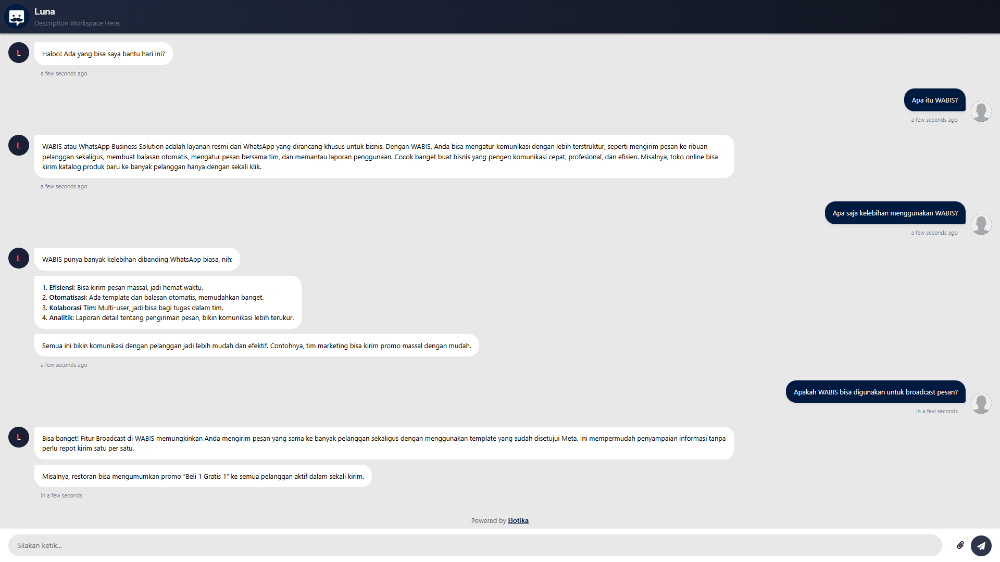 |
0.927 | PASS | 00:00:15 |
| Apakah WABIS bisa dipakai oleh banyak orang dalam satu tim? | Apakah WABIS bisa dipakai oleh banyak orang dalam satu tim? | Ya, WABIS mendukung fitur multi-user, sehingga satu akun bisa digunakan oleh beberapa admin sekaligus. Masing-masing admin dapat mengerjakan tugas berbeda seperti membuat broadcast atau memantau laporan. Namun, perlu diketahui bahwa menu Inbox di WABIS tidak digunakan untuk membalas chat secara langsung. Fitur ini lebih berfungsi untuk melihat dan memantau pesan yang masuk agar koordinasi tim lebih mudah. | Ya, WABIS mendukung fitur multi-user, jadi satu akun bisa dipakai beberapa admin sekaligus. Masing-masing admin bisa mengerjakan tugas berbeda, seperti membuat broadcast atau memantau laporan. Tapi, perlu diingat kalau menu Inbox di WABIS bukan buat balas chat langsung, lebih buat lihat dan pantau pesan yang masuk biar koordinasi tim lebih gampang. | Auto: ✓ Jawaban sudah cukup lengkap mencakup poin-poin utama. Bisa ditambahkan detail tentang sehingga, oleh untuk lebih komprehensif. |
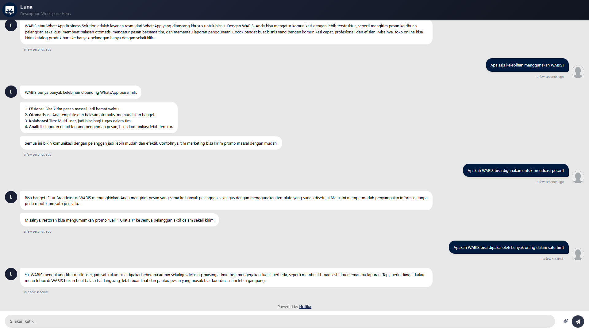 |
0.778 | PASS | 00:00:16 |
| Bagaimana cara mengakses website WABIS? | Bagaimana cara mengakses website WABIS? | Untuk mengakses WABIS, buka browser (Chrome/Firefox), lalu ketik alamat https://waofficial-rm.botika.online/ . Setelah itu, pilih Login untuk masuk dengan akun Botika. Pastikan koneksi internet stabil agar dashboard WABIS bisa terbuka dengan lancar. Contoh: pemilik bisnis bisa login via laptop untuk menyiapkan pesan broadcast. | Untuk mengakses WABIS, buka browser (Chrome/Firefox), lalu ketik alamat waofficial-rm.botika.online. Setelah itu, pilih Login untuk masuk dengan akun Botika. Pastikan koneksi internet stabil biar dashboard WABIS bisa terbuka dengan lancar. | Auto: ✓ Jawaban sudah cukup lengkap mencakup poin-poin utama. Bisa ditambahkan detail tentang https, agar untuk lebih komprehensif. |
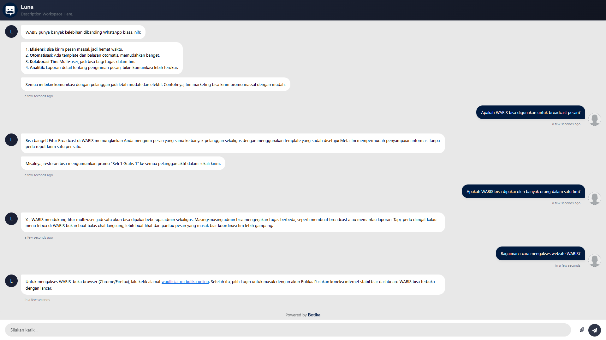 |
0.791 | PASS | 00:00:13 |
| Bagaimana cara registrasi akun WABIS? | Bagaimana cara registrasi akun WABIS? | Jika ingin menggunakan layanan WABIS, Anda perlu melakukan registrasi akun terlebih dahulu. Proses registrasi ini penting agar setiap pengguna memiliki akses pribadi untuk mengelola template, notifikasi, dan integrasi WhatsApp API sesuai kebutuhan bisnis. Langkah registrasi: 1) Buka website WABIS, lalu pilih Create Account di menu Login. 2) Isi data diri (nama, email, password) dan centang persetujuan. 3) Klik Next, lalu cek email untuk verifikasi akun. Contoh: Pemilik toko kosmetik mendaftar dengan email bisnis agar semua notifikasi pelanggan dapat dikelola secara terpusat. | Untuk registrasi akun WABIS, ikuti langkah-langkah ini: 1. Buka website WABIS dan pilih "Create Account" di menu Login. 2. Isi data diri (nama, email, password) dan centang persetujuan. 3. Klik Next, lalu cek email untuk verifikasi akun. Jangan lupa pastikan semua data yang diisi benar, ya! | Auto: ⚠ Jawaban hanya mencakup sebagian kecil informasi (layanan dan wabis). Banyak informasi penting yang belum disebutkan seperti jika, ingin, menggunakan. |
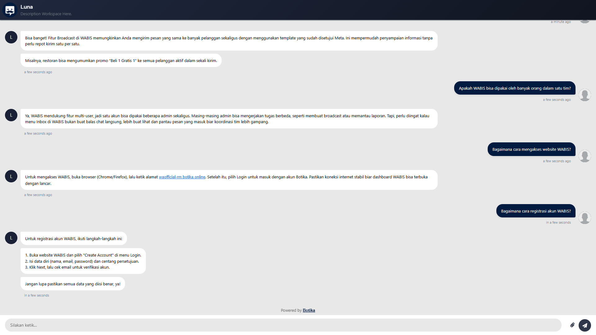 |
0.493 | FAILED | 00:00:37 |
| Apa saja data yang dibutuhkan untuk registrasi akun WABIS? | Apa saja data yang dibutuhkan untuk registrasi akun WABIS? | Saat registrasi akun WABIS, Anda perlu mengisi beberapa data penting, yaitu Nama Lengkap (untuk identitas akun), Username (sebagai nama pengguna unik), Email Aktif (untuk login dan verifikasi), Phone Number (untuk keperluan kontak dan keamanan), serta Password (untuk menjaga keamanan akun). Data ini wajib diisi agar sistem dapat mengenali pengguna dengan benar. Contoh: toko pakaian sebaiknya menggunakan email resmi perusahaan, bukan email pribadi. | Untuk registrasi akun WABIS, data yang dibutuhkan adalah: 1. Nama Lengkap 2. Username 3. Email Aktif 4. Phone Number 5. Password Pastikan data yang diisi akurat agar sistem bisa mengenali Anda dengan benar! | Auto: ⚠ Jawaban hanya mencakup sebagian kecil informasi (registrasi dan akun). Banyak informasi penting yang belum disebutkan seperti saat, perlu, mengisi. |
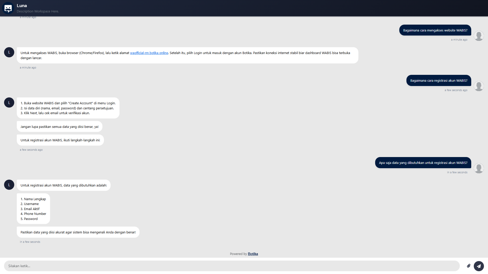 |
0.492 | FAILED | 00:00:37 |
| Bagaimana cara login ke akun WABIS? | Bagaimana cara login ke akun WABIS? | Untuk dapat mengakses layanan WABIS, pengguna wajib melakukan login terlebih dahulu. Login memastikan bahwa hanya akun yang terdaftar yang bisa mengelola pesan, template, serta laporan broadcast melalui dashboard WABIS. Dengan login, admin atau pemilik bisnis dapat memantau aktivitas WhatsApp API secara aman dan terpusat. Langkah login: 1) Buka website WABIS. 2) Klik Login, lalu masukkan email dan password yang terdaftar. 3) Klik Next. Jika data benar, sistem akan menampilkan dashboard utama. Contoh: Admin bisnis melakukan login setiap pagi untuk mengecek pesan masuk dan memantau laporan broadcast. | Untuk login ke akun WABIS, ikuti langkah berikut: 1) Buka website WABIS. 2) Klik Login, lalu masukkan email dan password yang terdaftar. 3) Klik Next. Jika data benar, Anda akan masuk ke dashboard utama. Semoga membantu! | Auto: ⚠ Jawaban hanya mencakup sebagian kecil informasi (untuk dan wabis). Banyak informasi penting yang belum disebutkan seperti dapat, mengakses, layanan. |
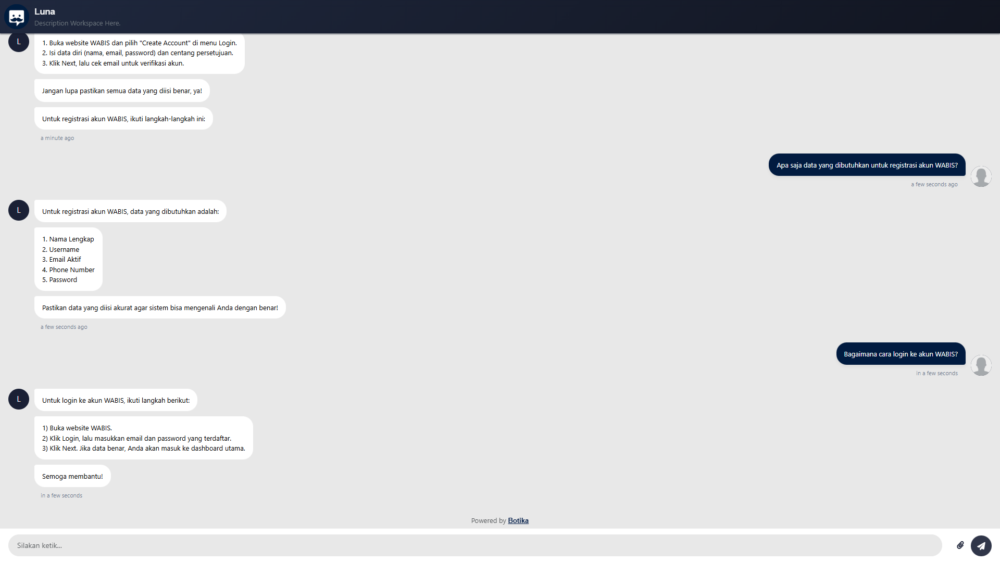 |
0.456 | FAILED | 00:00:37 |
| Bagaimana cara reset password akun WABIS? | Bagaimana cara reset password akun WABIS? | Jika Anda lupa password akun WABIS, tidak perlu khawatir. Sistem menyediakan fitur reset password agar akses akun bisa segera dipulihkan tanpa perlu membuat akun baru atau menghubungi support. Hal ini penting karena akun WABIS terhubung dengan pengelolaan pesan, template, dan laporan broadcast bisnis Anda. Berikut caranya: 1) Klik Forgot Password di halaman login. 2) Masukkan email terdaftar, lalu cek email untuk mendapatkan kode verifikasi. 3) Masukkan kode di form, lalu buat password baru. Dengan langkah ini, akses akun dapat kembali digunakan dengan cepat dan aman. Contoh: Staf baru yang salah input password bisa melakukan reset sendiri tanpa harus menunggu bantuan dari tim IT. | 1) Klik Forgot Password di halaman login. 2) Masukkan email terdaftar, lalu cek email untuk mendapatkan kode verifikasi. 3) Masukkan kode di form, lalu buat password baru. | Auto: ✗ Jawaban tidak cukup relevan dengan yang diharapkan. Sebagian besar informasi penting seperti jika, anda, lupa tidak disebutkan. |
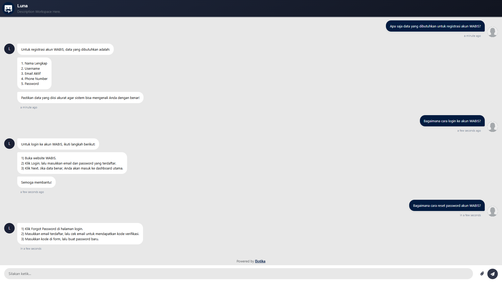 |
0.367 | FAILED | 00:00:12 |
| Apakah login WABIS menggunakan akun Botika? | Apakah login WABIS menggunakan akun Botika? | Ya. Jika sudah memiliki akun Botika, WABIS bisa diakses menggunakan akun tersebut karena WABIS sudah menggunakan sistem Single Sign-On (SSO). SSO adalah mekanisme login tunggal yang memungkinkan pengguna mengakses beberapa layanan Botika hanya dengan satu akun. Ini memudahkan karena Anda tidak perlu mengingat banyak akun. Contoh: jika sudah punya akun Botika untuk chatbot, akun itu bisa langsung digunakan untuk login ke WABIS. | Ya, Anda bisa login ke WABIS menggunakan akun Botika karena WABIS menggunakan sistem Single Sign-On (SSO). Jadi, satu akun bisa dipakai untuk mengakses beberapa layanan Botika. | Auto: ⚠ Jawaban sudah benar untuk bagian akun dan botika, tapi masih kurang lengkap. Perlu ditambahkan informasi tentang jika, sudah, memiliki. |
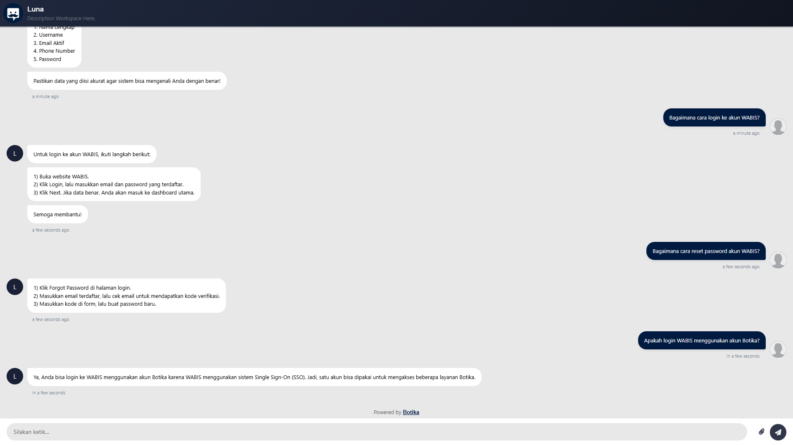 |
0.625 | FAILED | 00:00:13 |
| Apa syarat registrasi akun WhatsApp Business di WABIS? | Apa syarat registrasi akun WhatsApp Business di WABIS? | Untuk dapat menggunakan WABIS dan mendaftarkan nomor bisnis Anda di WhatsApp Business API, ada beberapa syarat yang harus dipenuhi terlebih dahulu. Syarat ini ditetapkan oleh Meta untuk memastikan nomor yang digunakan adalah resmi, valid, dan sesuai kebijakan. Syaratnya: 1) Memiliki akun Facebook yang masih aktif. 2) Memiliki akses ke Facebook Business Manager. 3)Menyediakan nomor telepon yang belum pernah dipakai di WhatsApp Business API. Semua persyaratan ini wajib dipenuhi agar nomor bisnis Anda bisa terdaftar secara resmi di Meta. Contoh: Perusahaan baru perlu membuat Business Manager terlebih dahulu sebelum bisa mendaftarkan nomor WhatsApp resminya. | Untuk registrasi akun WhatsApp Business di WABIS, syaratnya: 1) Memiliki akun Facebook yang masih aktif. 2) Memiliki akses ke Facebook Business Manager. 3) Menyediakan nomor telepon yang belum pernah dipakai di WhatsApp Business API. Semua syarat ini harus dipenuhi agar nomor bisnis Anda bisa terdaftar secara resmi di Meta. | Auto: ✓ Jawaban sudah cukup lengkap mencakup poin-poin utama. Bisa ditambahkan detail tentang dapat, menggunakan untuk lebih komprehensif. |
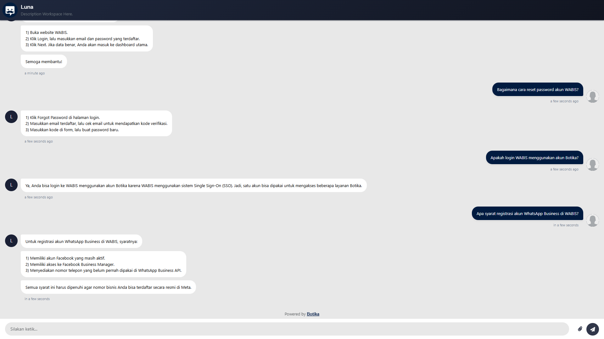 |
0.75 | PASS | 00:00:14 |
| Bisakah nomor pribadi dipakai untuk WhatsApp Business di WABIS? | Bisakah nomor pribadi dipakai untuk WhatsApp Business di WABIS? | Bisa, asalkan nomor belum terdaftar di WhatsApp Business API. Namun, disarankan memakai nomor khusus bisnis agar komunikasi lebih profesional dan tidak tercampur dengan chat pribadi. Contoh: pemilik toko online awalnya pakai nomor pribadi, lalu ganti ke nomor bisnis agar lebih rapi. | Bisa, asalkan nomor belum terdaftar di WhatsApp Business API. Tapi, disarankan memakai nomor khusus bisnis agar komunikasi lebih profesional dan tidak tercampur dengan chat pribadi. | Auto: ✓ Jawaban sudah cukup lengkap mencakup poin-poin utama. Bisa ditambahkan detail tentang namun, contoh untuk lebih komprehensif. |
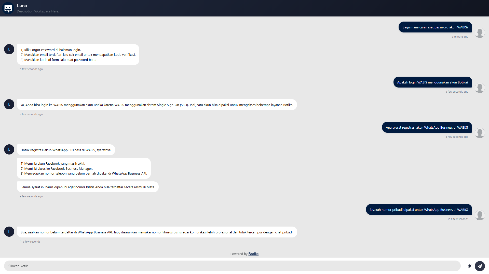 |
0.757 | PASS | 00:00:12 |
| Mengapa harus punya Facebook Business Manager? | Mengapa harus punya Facebook Business Manager? | Karena Facebook Business Manager adalah sarana resmi untuk memverifikasi bisnis. Tanpa Business Manager, perusahaan tidak bisa registrasi WhatsApp Business API. Dengan Business Manager, nomor bisnis Anda dianggap resmi oleh Meta dan pelanggan lebih percaya. Contoh: akun yang sudah diverifikasi tampil dengan tanda centang hijau. | Karena Facebook Business Manager adalah sarana resmi untuk memverifikasi bisnis. Tanpa Business Manager, perusahaan nggak bisa registrasi WhatsApp Business API. Dengan Business Manager, nomor bisnis Anda dianggap resmi oleh Meta dan pelanggan lebih percaya. Contohnya, akun yang sudah diverifikasi akan tampil dengan tanda centang hijau. | Auto: ✓ Jawaban sudah sangat baik dan lengkap. Semua informasi penting yang diharapkan sudah tercakup dengan akurat. |
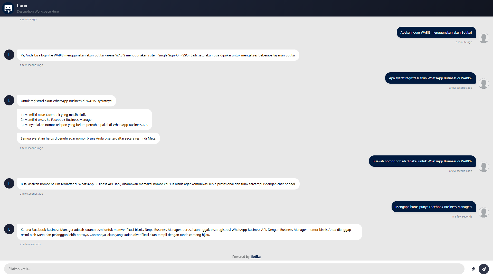 |
0.976 | PASS | 00:00:11 |
| Apakah nomor WhatsApp yang dipakai di WABIS bisa diganti? | Apakah nomor WhatsApp yang dipakai di WABIS bisa diganti? | Nomor WhatsApp di WABIS tidak bisa diganti langsung. Jika ingin menggunakan nomor lain, Anda perlu menambahkan nomor baru, lalu melakukan integrasi dan verifikasi ulang agar bisa digunakan di sistem. Proses ini memerlukan bantuan dari tim support Botika, jadi silakan hubungi support@botika.online untuk melakukan perubahan. | Nomor WhatsApp di WABIS nggak bisa diganti langsung. Kalau mau pakai nomor lain, Anda perlu menambahkan nomor baru, lalu melakukan integrasi dan verifikasi ulang. Proses ini perlu bantuan dari tim support Botika. Silakan hubungi support@botika.online untuk melakukan perubahan. | Auto: ✓ Jawaban sudah cukup lengkap mencakup poin-poin utama. Bisa ditambahkan detail tentang tidak, jika untuk lebih komprehensif. |
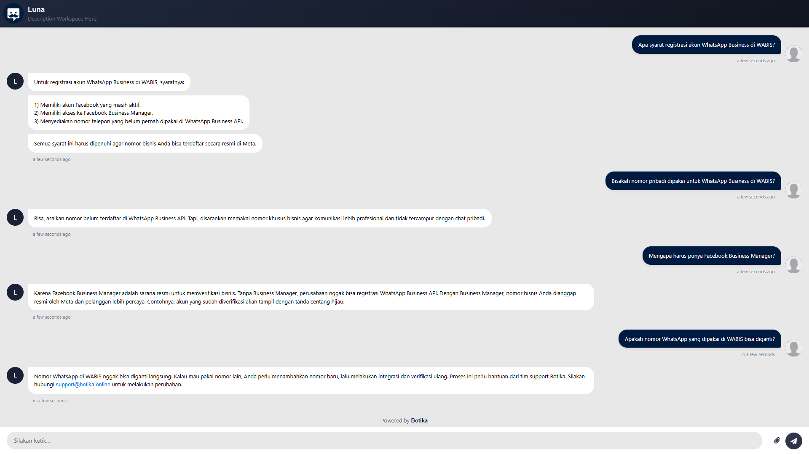 |
0.829 | PASS | 00:00:14 |
| Bagaimana cara menyinkronkan nomor di WABIS? | Bagaimana cara menyinkronkan nomor di WABIS? | Untuk sinkronisasi nomor: masuk ke menu Phone Number, lalu klik tombol Sync. Sistem akan memperbarui data nomor yang terhubung. Ini berguna jika ada perubahan nomor atau penambahan nomor baru. Contoh: setelah menambah nomor cabang baru, klik Sync agar nomor bisa dipakai. | Untuk sinkronisasi nomor di WABIS, Anda cukup masuk ke menu Phone Number, lalu klik tombol Sync. Sistem otomatis memperbarui data nomor yang terhubung. Ini berguna kalau ada perubahan atau penambahan nomor baru. Contohnya, setelah menambah nomor cabang baru, klik Sync agar nomor bisa dipakai. | Auto: ✓ Jawaban sudah sangat baik dan lengkap. Semua informasi penting yang diharapkan sudah tercakup dengan akurat. |
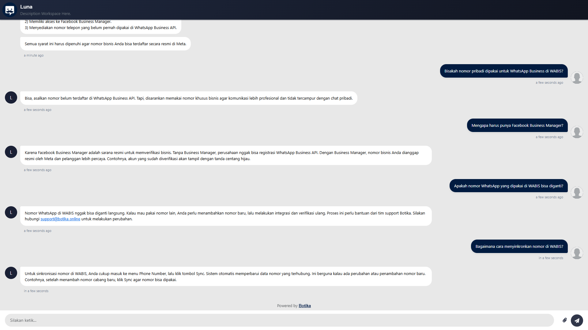 |
0.947 | PASS | 00:00:15 |
| Apa itu Message Template? | Apa itu Message Template? | Message Template adalah pesan siap pakai yang sudah disetujui Meta. Template digunakan untuk notifikasi, promosi, atau autentikasi agar pesan bisnis tidak dianggap spam. Template ini bisa dipakai berulang kali dengan isi yang konsisten. Contoh: template “Pesanan Anda sudah dikirim. Resi: {nomor}” dipakai tiap kali order dikirim. | Message Template itu pesan siap pakai yang sudah disetujui Meta. Gunanya buat notifikasi, promosi, atau autentikasi biar pesan bisnis nggak dianggap spam. Template ini bisa dipakai berulang kali dengan isi yang konsisten. Misalnya, template "Pesanan Anda sudah dikirim. Resi: {nomor}" bisa dipakai setiap kali order dikirim. Jadi, lebih praktis dan efisien! | Auto: ✓ Jawaban sudah cukup lengkap mencakup poin-poin utama. Bisa ditambahkan detail tentang adalah, digunakan untuk lebih komprehensif. |
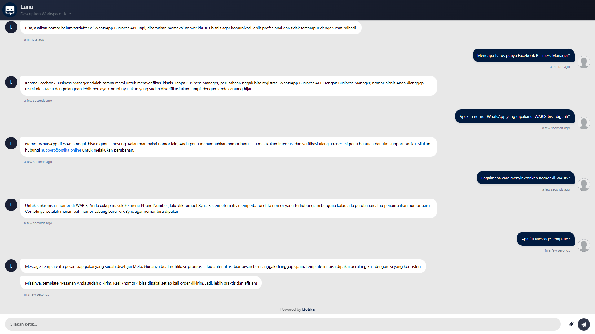 |
0.864 | PASS | 00:00:16 |
| Bagaimana cara membuat Message Template baru? | Bagaimana cara membuat Message Template baru? | Untuk mengirim pesan otomatis di WABIS, Anda perlu membuat Message Template terlebih dahulu. Template ini merupakan format pesan resmi yang harus disetujui oleh Meta sebelum digunakan, agar bisnis dapat mengirim notifikasi atau pengingat secara konsisten sesuai kebijakan WhatsApp. Langkah-langkah: 1) Buka menu Message Template dan klik +Create, lalu isi nama, kategori, bahasa, serta teks pesan (tambahkan header, footer, atau button jika perlu). 2) Jika template berisi variable, tambahkan Sample Content terlebih dahulu dengan klik tombol Add Sample. Langkah ini membantu Meta memahami jenis pesan yang ingin Anda sampaikan. 3) Klik Save, lalu tunggu proses persetujuan dari Meta sebelum template dapat digunakan. Contoh: Buat template pengingat pembayaran dengan tombol “Bayar Sekarang” agar pelanggan bisa langsung menyelesaikan transaksi. | Untuk bikin Message Template baru di WABIS, ikuti langkah-langkah ini: 1) Masuk ke menu Message Template dan klik +Create. Isi nama, kategori, bahasa, dan teks pesan (bisa tambahkan header, footer, atau button kalau perlu). 2) Kalau template ada variabel, tambahkan Sample Content dulu dengan klik tombol Add Sample. Ini buat bantu Meta paham jenis pesan yang mau Anda kirim. 3) Klik Save, lalu tunggu persetujuan dari Meta sebelum template bisa dipakai. Contohnya, buat template pengingat pembayaran dengan tombol "Bayar Sekarang" biar pelanggan bisa langsung bertransaksi. | Auto: ✓ Jawaban sudah cukup lengkap mencakup poin-poin utama. Bisa ditambahkan detail tentang mengirim, otomatis untuk lebih komprehensif. |
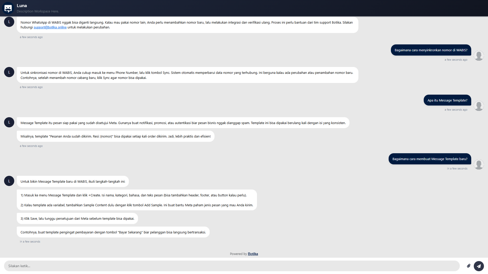 |
0.704 | PASS | 00:00:37 |
| Apa yang terjadi setelah membuat Message Template? | Apa yang terjadi setelah membuat Message Template? | Setelah disimpan, template akan diperiksa oleh Meta. Jika disetujui, status berubah jadi Active dan bisa digunakan di broadcast. Jika ditolak, Anda harus revisi sesuai aturan Meta. Proses ini memastikan semua pesan sesuai kebijakan WhatsApp. Contoh: template promosi hanya bisa dipakai setelah statusnya Active. | Setelah disimpan, template bakal diperiksa sama Meta. Kalau disetujui, statusnya jadi Active dan bisa dipakai buat broadcast. Tapi kalau ditolak, Anda harus revisi sesuai aturan Meta. Proses ini buat pastiin semua pesan sesuai kebijakan WhatsApp. Contoh: template promosi cuma bisa dipakai setelah statusnya Active. | Auto: ✓ Jawaban sudah cukup lengkap mencakup poin-poin utama. Bisa ditambahkan detail tentang oleh, jika untuk lebih komprehensif. |
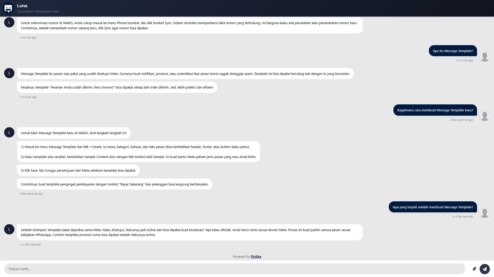 |
0.825 | PASS | 00:00:14 |
| Apa saja tipe Message Template di WABIS? | Apa saja tipe Message Template di WABIS? | Di WABIS, setiap pesan otomatis yang ingin dikirim melalui WhatsApp Business API harus menggunakan Message Template. Template ini dibagi ke dalam beberapa tipe sesuai tujuan pengiriman, dan pemilihan tipe yang tepat sangat penting agar pesan disetujui oleh Meta. Ada tiga tipe Message Template di WABIS: 1) Marketing – digunakan untuk promosi, penawaran, atau kampanye pemasaran. 2) Utility – digunakan untuk informasi penting, seperti konfirmasi transaksi, status pesanan, atau pengingat (reminder). 3) Authentication – digunakan untuk keamanan, misalnya verifikasi login atau pengiriman OTP. Pemilihan tipe harus sesuai dengan fungsinya agar tidak ditolak oleh Meta. Contoh: Gunakan Utility untuk notifikasi pesanan, bukan Marketing. | Di WABIS, ada tiga tipe Message Template: 1) Marketing – Buat promosi, penawaran, atau kampanye pemasaran. 2) Utility – Buat informasi penting, kayak konfirmasi transaksi, status pesanan, atau pengingat. 3) Authentication – Buat keamanan, misalnya verifikasi login atau kirim OTP. Pilih tipe yang benar biar nggak ditolak Meta. Misal: pakai Utility buat notifikasi pesanan, bukan Marketing. | Auto: ⚠ Jawaban hanya mencakup sebagian kecil informasi (wabis dan pesan). Banyak informasi penting yang belum disebutkan seperti setiap, otomatis, ingin. |
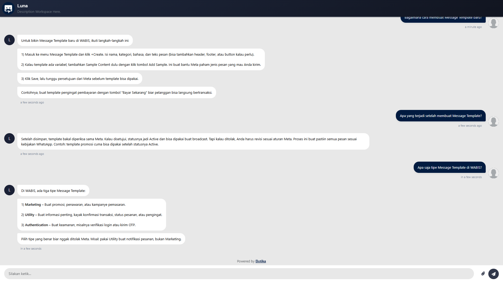 |
0.598 | FAILED | 00:00:37 |
| Apa fungsi Message Template tipe Marketing? | Apa fungsi Message Template tipe Marketing? | Tipe Marketing digunakan untuk promosi dan penawaran. Misalnya mengajak pelanggan ikut event atau memberi diskon produk. Template ini mendorong interaksi pelanggan dan meningkatkan penjualan. Contoh: pesan “Promo Diskon 30% berlaku hari ini” dikirim via Broadcast. | Tipe Marketing dipakai buat promosi dan penawaran. Contohnya, ngajak pelanggan ikut event atau kasih diskon produk. Ini bisa ningkatin interaksi pelanggan dan penjualan. Misalnya, pesan “Promo Diskon 30% berlaku hari ini” dikirim via Broadcast. | Auto: ✓ Jawaban sudah cukup lengkap mencakup poin-poin utama. Bisa ditambahkan detail tentang digunakan, untuk untuk lebih komprehensif. |
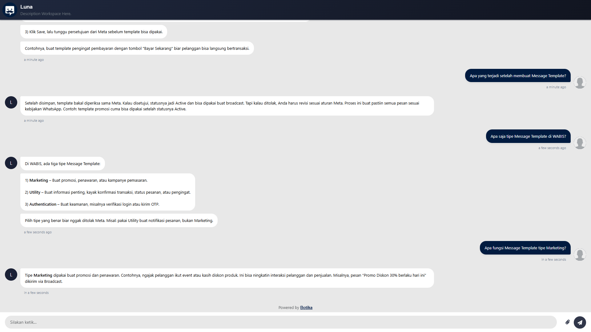 |
0.793 | PASS | 00:00:14 |
| Apa itu Broadcast di WABIS? | Apa itu Broadcast di WABIS? | Broadcast adalah fitur untuk mengirim satu pesan yang sama ke banyak pelanggan sekaligus. Fitur ini hanya bisa digunakan dengan Message Template yang sudah disetujui oleh Meta, sehingga aman dari risiko dianggap spam. Broadcast sangat membantu ketika bisnis ingin menyampaikan informasi massal dengan cepat, tanpa harus mengirim manual satu per satu. Untuk menggunakannya, masuk ke menu Broadcast, pilih template yang sesuai, tentukan penerima, dan kirim. Contoh: restoran cepat saji bisa mengumumkan promo “Beli 1 Gratis 1” ke seluruh pelanggan aktif hanya dengan satu klik. | Broadcast di WABIS adalah fitur buat ngirim satu pesan yang sama ke banyak pelanggan sekaligus. Pesannya harus pakai Message Template yang udah disetujui Meta, jadi aman dari risiko dianggap spam. Contoh: restoran bisa kirim promo “Beli 1 Gratis 1” ke semua pelanggan aktif cuma dengan satu klik. | Auto: ⚠ Jawaban sudah benar untuk bagian broadcast dan adalah, tapi masih kurang lengkap. Perlu ditambahkan informasi tentang untuk, hanya, oleh. |
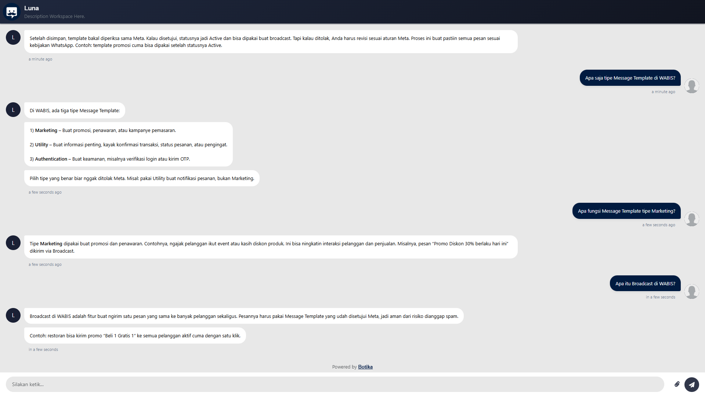 |
0.64 | FAILED | 00:00:14 |
| Bagaimana cara membuat Broadcast baru? | Bagaimana cara membuat Broadcast baru? | Untuk membuat broadcast baru: 1) Masuk ke menu Broadcast di dashboard WABIS, lalu klik tombol +Create dan isi nama broadcast agar mudah dikenali. 2)Pilih nomor pengirim yang terdaftar, tentukan template pesan yang sudah disetujui, lalu pilih penerima dari kontak, atau upload file. 3)Atur waktu pengiriman (langsung atau terjadwal) dan klik Send untuk mengirim broadcast. Contoh: toko pakaian membuat broadcast berjudul “Promo Akhir Tahun” untuk pelanggan setia. | 1) Masuk ke menu Broadcast di dashboard WABIS, klik tombol +Create, dan isi nama broadcast biar gampang dikenali. 2) Pilih nomor pengirim yang terdaftar, tentukan template pesan yang udah disetujui, terus pilih penerima dari kontak, atau upload file. 3) Atur waktu pengiriman (langsung atau terjadwal) dan klik Send buat kirim broadcast. Contoh: toko pakaian bikin broadcast "Promo Akhir Tahun" buat pelanggan setia. | Auto: ✓ Jawaban sudah cukup lengkap mencakup poin-poin utama. Bisa ditambahkan detail tentang untuk, baru untuk lebih komprehensif. |
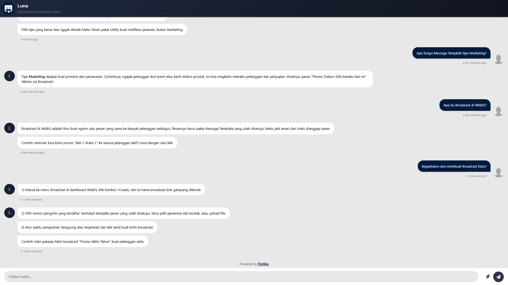 |
0.85 | PASS | 00:00:17 |
| Apakah Broadcast bisa dijadwalkan? | Apakah Broadcast bisa dijadwalkan? | Bisa. Saat membuat broadcast, Anda bisa memilih apakah pesan dikirim langsung atau dijadwalkan pada waktu tertentu. Fitur ini sangat berguna agar pesan terkirim di saat paling tepat, misalnya saat pelanggan aktif membaca WhatsApp. Untuk menjadwalkan, cukup pilih tanggal dan jam di form broadcast sebelum klik Send. Contoh: promo makan siang dijadwalkan terkirim pukul 11:30 agar pelanggan langsung tertarik memesan. | Bisa banget! Saat bikin broadcast, Anda bisa pilih mau kirim langsung atau dijadwalkan pada waktu tertentu. Ini berguna banget biar pesan terkirim pas pelanggan lagi aktif baca WhatsApp. Tinggal pilih tanggal dan jam di form broadcast sebelum klik Send. | Auto: ⚠ Jawaban sudah benar untuk bagian bisa dan saat, tapi masih kurang lengkap. Perlu ditambahkan informasi tentang membuat, memilih, apakah. |
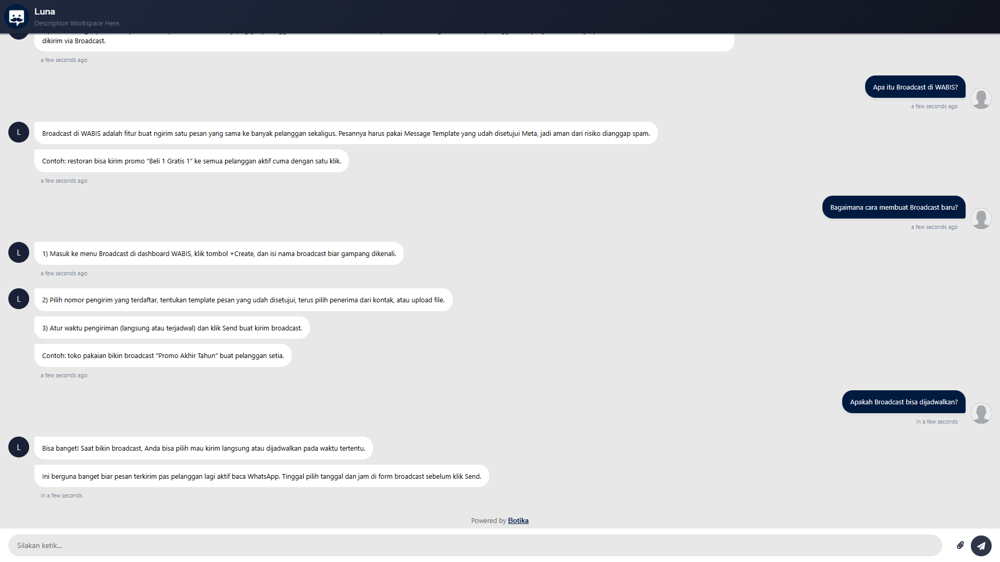 |
0.623 | FAILED | 00:00:37 |
| Bagaimana cara menyimpan draft Broadcast? | Bagaimana cara menyimpan draft Broadcast? | Jika Anda belum selesai menyiapkan pesan, broadcast bisa disimpan sebagai draft. Caranya: setelah mengisi sebagian data broadcast, klik tombol Save as Draft sebelum keluar. Draft ini bisa dilanjutkan dan diedit kapan saja tanpa harus mulai dari awal. Hal ini sangat membantu jika Anda ingin menyiapkan beberapa kampanye sekaligus. Contoh: admin menyimpan draft “Promo Ramadhan” seminggu sebelum tanggal pengiriman agar bisa direvisi dulu. | Gampang aja kok! Pas Anda lagi isi data broadcast, klik tombol "Save as Draft" sebelum keluar. Jadi, nanti bisa dilanjutin dan diedit kapan aja tanpa mulai dari awal. | Auto: ⚠ Jawaban hanya mencakup sebagian kecil informasi (anda dan belum). Banyak informasi penting yang belum disebutkan seperti jika, selesai, menyiapkan. |
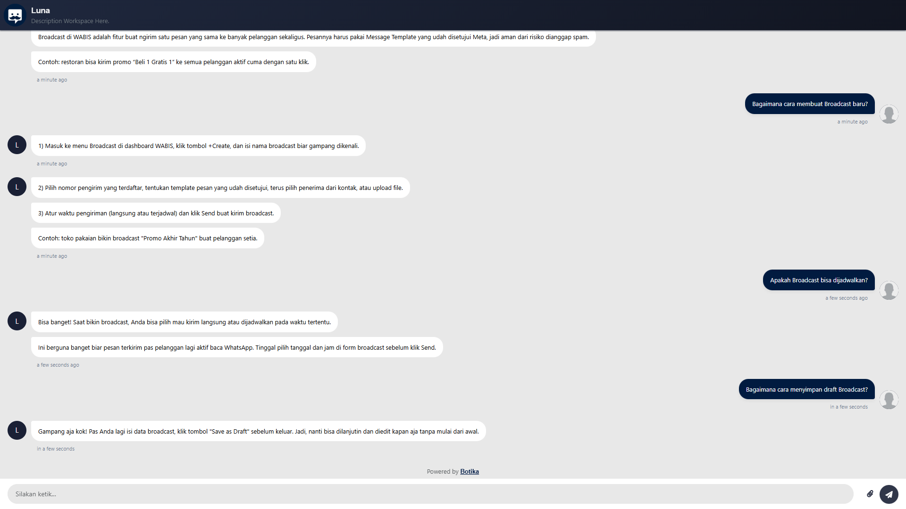 |
0.509 | FAILED | 00:00:13 |
| Bagaimana cara melihat detail Broadcast? | Bagaimana cara melihat detail Broadcast? | Untuk melihat detail broadcast, buka menu Broadcast, lalu cari broadcast yang diinginkan. Klik ikon setting di kolom Action untuk membuka detailnya. Di sana Anda bisa melihat status pesan, jumlah terkirim, terbaca, atau gagal. Informasi ini penting untuk mengevaluasi efektivitas kampanye. Contoh: tim marketing mengecek detail broadcast “Flash Sale” untuk mengetahui berapa pelanggan yang sudah membaca pesan. | Cukup masuk ke menu Broadcast, cari broadcast yang diinginkan, terus klik ikon setting di kolom Action buat buka detailnya. Anda bisa lihat status pesan, jumlah terkirim, terbaca, atau gagal. | Auto: ⚠ Jawaban sudah benar untuk bagian melihat dan detail, tapi masih kurang lengkap. Perlu ditambahkan informasi tentang untuk, lalu, untuk. |
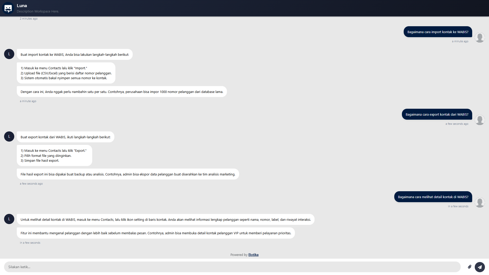 |
0.615 | FAILED | 00:00:14 |
| Bagaimana cara mengunduh laporan Broadcast? | Bagaimana cara mengunduh laporan Broadcast? | Anda bisa mengunduh laporan broadcast untuk analisis lebih lanjut. Caranya: buka menu Broadcast, klik broadcast yang diinginkan, lalu pilih tombol Unduh Report. File laporan biasanya berbentuk Excel atau CSV sehingga bisa diolah kembali. Laporan ini bermanfaat untuk menilai keberhasilan kampanye. Contoh: admin mengunduh laporan “Promo Natal” untuk mengecek tingkat keterbacaan pesan. | Untuk ngunduh laporan broadcast, buka menu Broadcast, klik broadcast yang Anda mau, terus pilih tombol Unduh Report. File-nya biasanya dalam bentuk Excel atau CSV, jadi bisa diolah lagi buat analisis. | Auto: ⚠ Jawaban sudah benar untuk bagian anda dan bisa, tapi masih kurang lengkap. Perlu ditambahkan informasi tentang lebih, lanjut, diinginkan. |
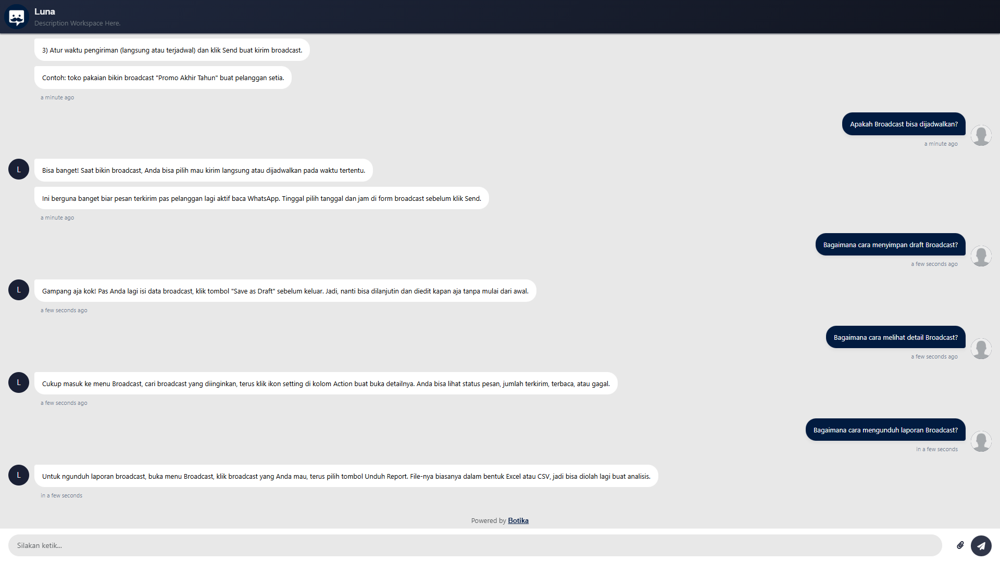 |
0.633 | FAILED | 00:00:14 |
| Bagaimana cara mencari Broadcast tertentu? | Bagaimana cara mencari Broadcast tertentu? | Untuk mencari broadcast, gunakan kolom Search di menu Broadcast. Cukup ketik nama broadcast atau kata kunci terkait, dan sistem akan menampilkan hasil pencarian. Fitur ini memudahkan menemukan broadcast lama tanpa harus scroll panjang. Contoh: admin mengetik “Lebaran” untuk menemukan broadcast “Promo Lebaran 2023”. | Anda bisa pakai kolom Search di menu Broadcast. Tinggal ketik nama broadcast atau kata kunci terkait, nanti sistem bakal menampilkan hasil pencariannya. Jadi nggak perlu scroll panjang! | Auto: ⚠ Jawaban hanya mencakup sebagian kecil informasi (broadcast dan kolom). Banyak informasi penting yang belum disebutkan seperti untuk, mencari, gunakan. |
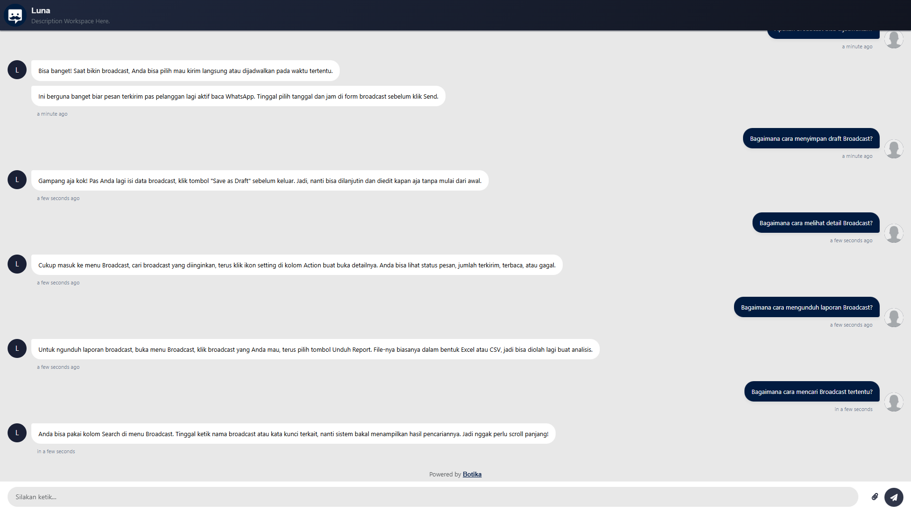 |
0.5 | FAILED | 00:00:12 |
| Apa itu Inbox di WABIS? | Apa itu Inbox di WABIS? | Fitur Inbox di WABIS berfungsi untuk menampilkan dan memantau semua pesan masuk maupun keluar dari pelanggan secara real-time. Melalui Inbox, Anda dapat memastikan tidak ada percakapan yang terlewat dan seluruh histori interaksi tersimpan dengan rapi. Namun, perlu diketahui bahwa Anda tidak dapat membalas chat langsung dari dashboard WABIS fitur ini hanya digunakan untuk memantau percakapan yang terjadi. Untuk membalas pesan pelanggan, Anda perlu menggunakan Omnibotika atau CRM eksternal yang terintegrasi dengan nomor WhatsApp bisnis Anda. | Fitur Inbox di WABIS buat nampilin dan mantau semua pesan masuk dan keluar dari pelanggan secara real-time. Jadi, Anda bisa pastiin nggak ada percakapan yang terlewat dan seluruh histori interaksi tersimpan rapi. Tapi, buat balas chat, Anda perlu pakai Omnibotika atau CRM eksternal yang terintegrasi. | Auto: ⚠ Jawaban sudah benar untuk bagian fitur dan inbox, tapi masih kurang lengkap. Perlu ditambahkan informasi tentang berfungsi, untuk, menampilkan. |
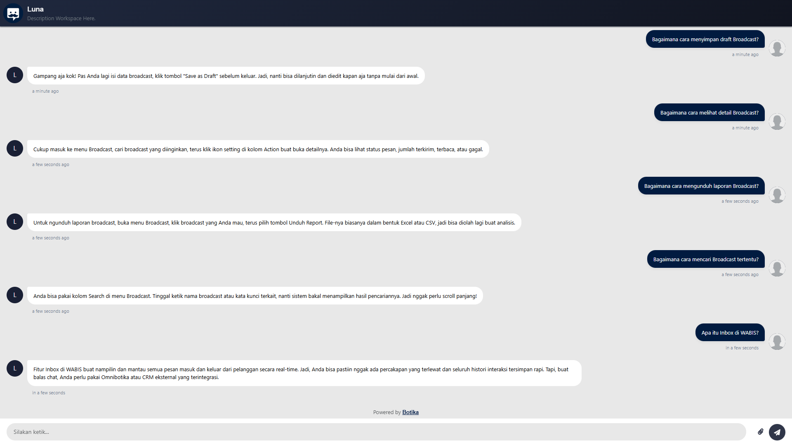 |
0.671 | FAILED | 00:00:14 |
| Bagaimana cara mencari pesan tertentu di Inbox? | Bagaimana cara mencari pesan tertentu di Inbox? | Kolom Search di menu Inbox digunakan untuk mencari kontak berdasarkan nomor telepon atau nama user. Fitur ini membantu admin menemukan kontak tertentu dengan cepat di antara banyak pengguna. | Anda bisa gunakan kolom Search di menu Inbox untuk cari kontak berdasarkan nomor telepon atau nama user. Fitur ini membantu banget buat nemuin kontak tertentu dengan cepat di antara banyak pengguna. | Auto: ✓ Jawaban sudah sangat baik dan lengkap. Semua informasi penting yang diharapkan sudah tercakup dengan akurat. |
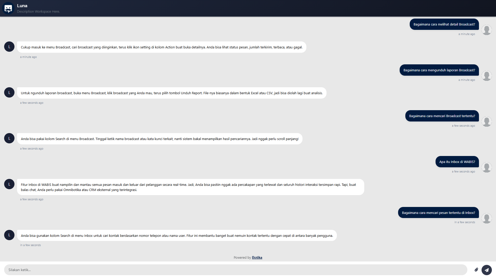 |
0.92 | PASS | 00:00:13 |
| Apakah Inbox menampilkan semua percakapan pelanggan? | Apakah Inbox menampilkan semua percakapan pelanggan? | Ya. Inbox menampilkan semua riwayat pesan masuk dan keluar, baik yang lama maupun terbaru. Dengan begitu, tim bisa melihat konteks penuh dari interaksi dengan pelanggan. Hal ini sangat penting agar tidak ada informasi yang hilang saat pelanggan dilayani oleh admin yang berbeda. Contoh: ketika pelanggan komplain, admin baru bisa melihat percakapan sebelumnya di Inbox. | Ya, Inbox menampilkan semua riwayat pesan masuk dan keluar, baik yang lama maupun terbaru. Ini penting banget supaya tim bisa lihat konteks penuh dari interaksi dengan pelanggan, jadi nggak ada info yang hilang saat pelanggan dilayani oleh admin yang berbeda. | Auto: ✓ Jawaban sudah cukup lengkap mencakup poin-poin utama. Bisa ditambahkan detail tentang begitu, sangat untuk lebih komprehensif. |
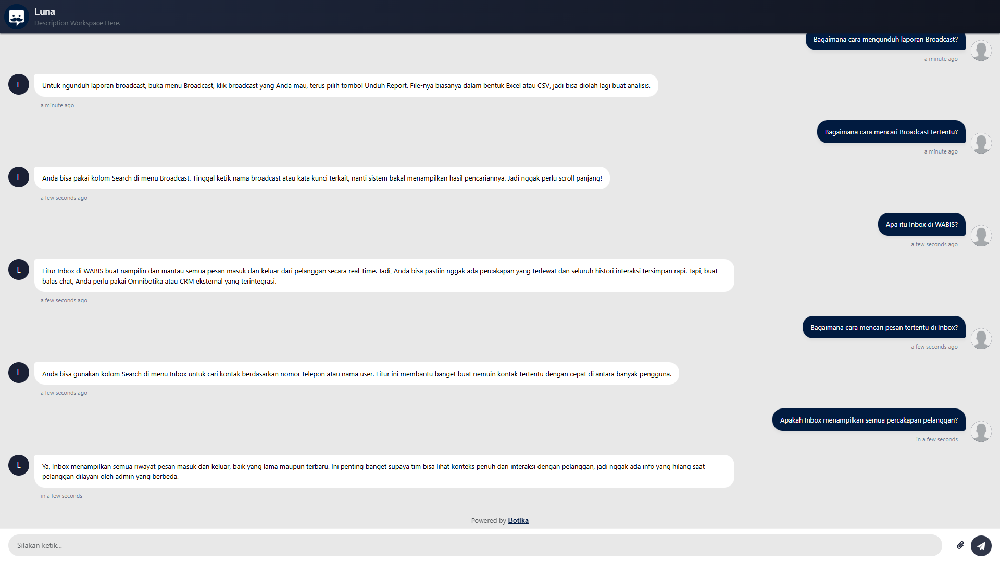 |
0.83 | PASS | 00:00:13 |
| Apa itu Contacts di WABIS? | Apa itu Contacts di WABIS? | Contacts adalah menu yang menyimpan daftar pelanggan yang pernah berinteraksi dengan bisnis Anda. Nomor yang pertama kali menghubungi akan otomatis tersimpan di sini. Kontak ini bisa digunakan untuk broadcast, segmentasi dengan label, atau pelacakan interaksi pelanggan. Contoh: pelanggan baru yang chat pertama kali langsung masuk ke menu Contacts. | Contacts di WABIS adalah menu yang nyimpen daftar pelanggan yang pernah interaksi sama bisnis Anda. Nomor yang pertama kali menghubungi bakal otomatis kesimpen di sini. Kontak ini bisa dipakai buat broadcast, segmentasi dengan label, atau pelacakan interaksi pelanggan. Contohnya, kalau ada pelanggan baru yang chat, langsung deh masuk ke menu Contacts. | Auto: ✓ Jawaban sudah sangat baik dan lengkap. Semua informasi penting yang diharapkan sudah tercakup dengan akurat. |
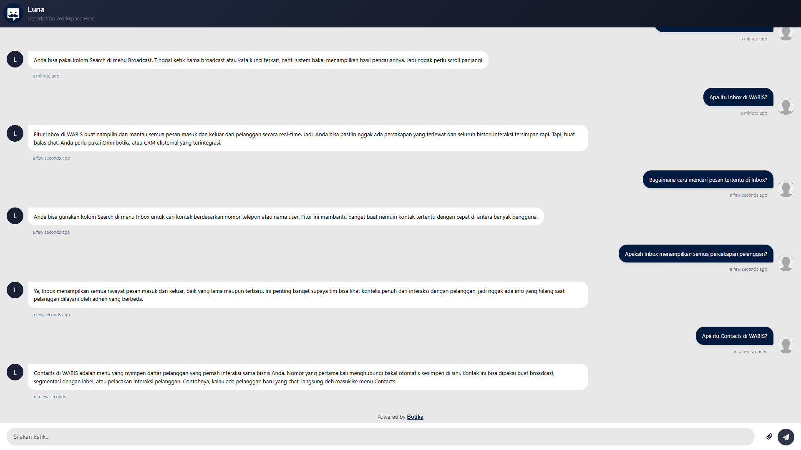 |
0.933 | PASS | 00:00:15 |
| Bagaimana cara menambahkan kontak baru di WABIS? | Bagaimana cara menambahkan kontak baru di WABIS? | Jika nomor pelanggan belum otomatis tersimpan, Anda bisa menambahkannya manual. 1) Masuk ke menu Contacts lalu klik +Create. 2) Masukkan data kontak seperti nama, nomor, email, alamat (opsional), dan label bila diperlukan. 3) Klik Save untuk menyimpan. Fitur ini berguna untuk memasukkan data pelanggan yang Anda dapat dari luar WhatsApp. Contoh: admin menambahkan nomor pelanggan yang memberikan data lewat telepon. | Untuk menambah kontak baru di WABIS, Anda bisa ikuti langkah-langkah ini: 1) Masuk ke menu Contacts lalu klik "+Create." 2) Masukkan data kontak seperti nama, nomor, email, alamat (opsional), dan label bila diperlukan. 3) Klik "Save" untuk menyimpan. Fitur ini berguna banget buat masukin data pelanggan yang Anda dapat dari luar WhatsApp. Misalnya, admin bisa nambahin nomor pelanggan yang kasih data lewat telepon. | Auto: ✓ Jawaban sudah cukup lengkap mencakup poin-poin utama. Bisa ditambahkan detail tentang jika, belum untuk lebih komprehensif. |
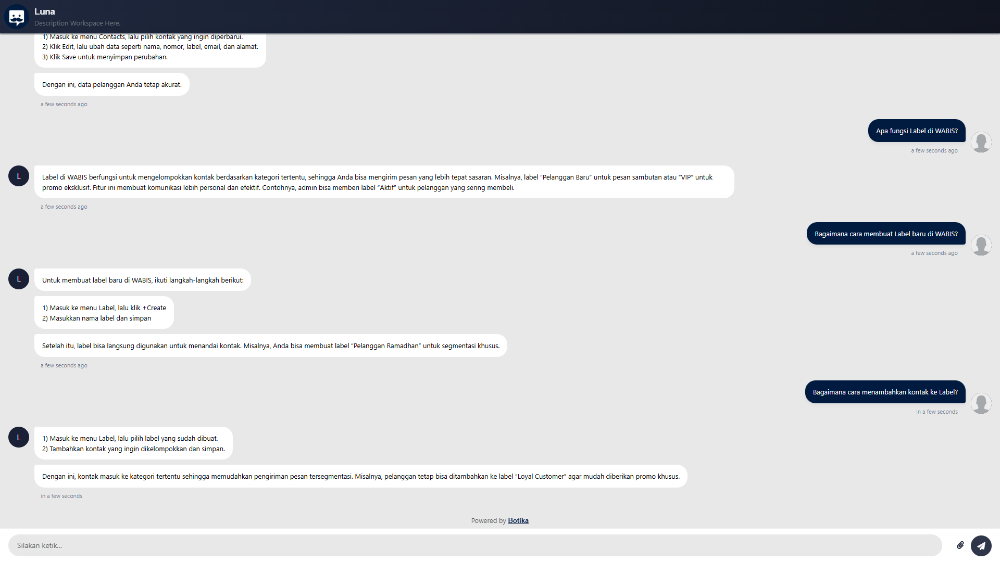 |
0.87 | PASS | 00:00:37 |
| Bagaimana cara import kontak ke WABIS? | Bagaimana cara import kontak ke WABIS? | Import kontak berguna untuk menambahkan banyak nomor sekaligus. 1) Masuk ke menu Contacts lalu klik Import. 2) Upload file (CSV/Excel) berisi daftar nomor pelanggan. 3) Sistem otomatis menyimpan semua nomor ke kontak. Dengan cara ini, Anda tidak perlu menambahkan satu per satu. Contoh: perusahaan mengimpor 1000 nomor pelanggan dari database lama. | Buat import kontak ke WABIS, Anda bisa lakukan langkah-langkah berikut: 1) Masuk ke menu Contacts lalu klik "Import." 2) Upload file (CSV/Excel) yang berisi daftar nomor pelanggan. 3) Sistem otomatis bakal nyimpen semua nomor ke kontak. Dengan cara ini, Anda nggak perlu nambahin satu per satu. Contohnya, perusahaan bisa impor 1000 nomor pelanggan dari database lama. | Auto: ✓ Jawaban sudah cukup lengkap mencakup poin-poin utama. Bisa ditambahkan detail tentang berguna, untuk untuk lebih komprehensif. |
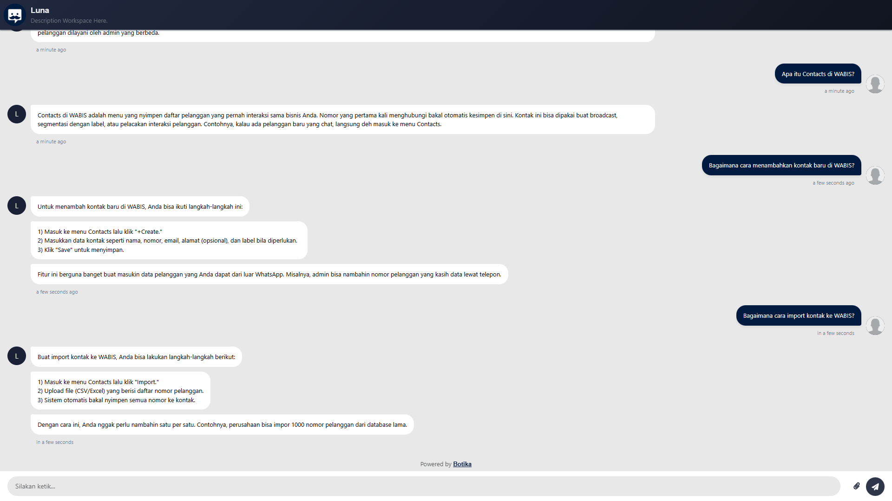 |
0.818 | PASS | 00:00:37 |
| Bagaimana cara export kontak dari WABIS? | Bagaimana cara export kontak dari WABIS? | Export kontak dipakai untuk mengunduh daftar pelanggan yang sudah ada di sistem. 1) Masuk ke menu Contacts lalu klik Export. 2) Pilih format file yang diinginkan. 3) Simpan file hasil export. File hasil export bisa dipakai untuk backup atau analisis. Contoh: admin mengekspor data pelanggan untuk diserahkan ke tim analisis marketing. | Buat export kontak dari WABIS, ikuti langkah-langkah berikut: 1) Masuk ke menu Contacts lalu klik "Export." 2) Pilih format file yang diinginkan. 3) Simpan file hasil export. File hasil export ini bisa dipakai buat backup atau analisis. Contohnya, admin bisa ekspor data pelanggan buat diserahkan ke tim analisis marketing. | Auto: ✓ Jawaban sudah cukup lengkap mencakup poin-poin utama. Bisa ditambahkan detail tentang untuk, mengunduh untuk lebih komprehensif. |
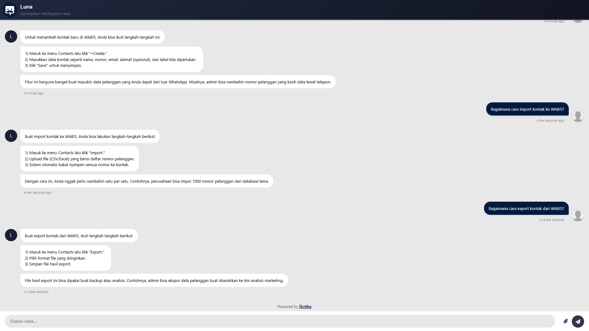 |
0.837 | PASS | 00:00:37 |
| Bagaimana cara melihat detail kontak di WABIS? | Bagaimana cara melihat detail kontak di WABIS? | Untuk melihat detail, masuk ke menu Contacts, lalu klik ikon setting di baris kontak. Anda akan melihat informasi lengkap pelanggan, seperti nama, nomor, label, dan riwayat interaksi. Fitur ini membantu mengenal pelanggan dengan lebih baik sebelum membalas pesan. Contoh: admin membuka detail kontak pelanggan VIP untuk memberi pelayanan prioritas. | Untuk melihat detail kontak di WABIS, masuk ke menu Contacts, lalu klik ikon setting di baris kontak. Anda akan melihat informasi lengkap pelanggan seperti nama, nomor, label, dan riwayat interaksi. Fitur ini membantu mengenal pelanggan dengan lebih baik sebelum membalas pesan. Contohnya, admin bisa membuka detail kontak pelanggan VIP untuk memberi pelayanan prioritas. | Auto: ✓ Jawaban sudah sangat baik dan lengkap. Semua informasi penting yang diharapkan sudah tercakup dengan akurat. | 1 | PASS | 00:00:14 | |
| Bagaimana cara mengedit kontak di WABIS? | Bagaimana cara mengedit kontak di WABIS? | Jika ada data kontak yang perlu diperbarui, lakukan langkah berikut: 1) Masuk ke menu Contacts lalu pilih kontak yang ingin diperbarui. 2) Klik Edit, lalu ubah data (nama, nomor, label, email dan address). 3) Klik Save untuk menyimpan perubahan. Dengan ini, data pelanggan tetap akurat. Contoh: admin memperbarui nama pelanggan yang sebelumnya hanya tersimpan sebagai nomor. | Untuk mengedit kontak di WABIS, ikuti langkah-langkah berikut: 1) Masuk ke menu Contacts, lalu pilih kontak yang ingin diperbarui. 2) Klik Edit, lalu ubah data seperti nama, nomor, label, email, dan alamat. 3) Klik Save untuk menyimpan perubahan. Dengan ini, data pelanggan Anda tetap akurat. | Auto: ✓ Jawaban sudah cukup lengkap mencakup poin-poin utama. Bisa ditambahkan detail tentang jika, perlu untuk lebih komprehensif. |
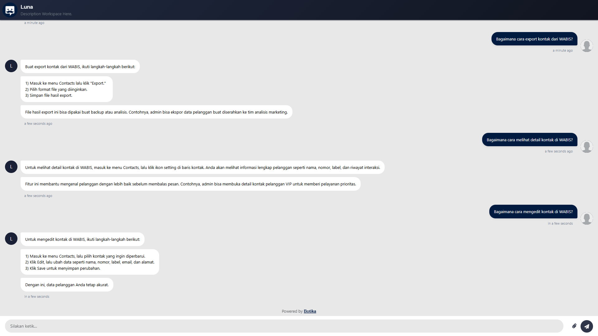 |
0.776 | PASS | 00:00:16 |
| Apa fungsi Label di WABIS? | Apa fungsi Label di WABIS? | Label berfungsi untuk mengelompokkan kontak berdasarkan kategori tertentu. Dengan label, Anda bisa mengirim pesan yang lebih tepat sasaran. Misalnya, label “Pelanggan Baru” untuk pesan sambutan, atau “VIP” untuk promo eksklusif. Fitur ini membuat komunikasi lebih personal dan efektif. Contoh: admin memberi label “Aktif” untuk pelanggan yang sering membeli. | Label di WABIS berfungsi untuk mengelompokkan kontak berdasarkan kategori tertentu, sehingga Anda bisa mengirim pesan yang lebih tepat sasaran. Misalnya, label “Pelanggan Baru” untuk pesan sambutan atau “VIP” untuk promo eksklusif. Fitur ini membuat komunikasi lebih personal dan efektif. Contohnya, admin bisa memberi label “Aktif” untuk pelanggan yang sering membeli. | Auto: ✓ Jawaban sudah sangat baik dan lengkap. Semua informasi penting yang diharapkan sudah tercakup dengan akurat. |
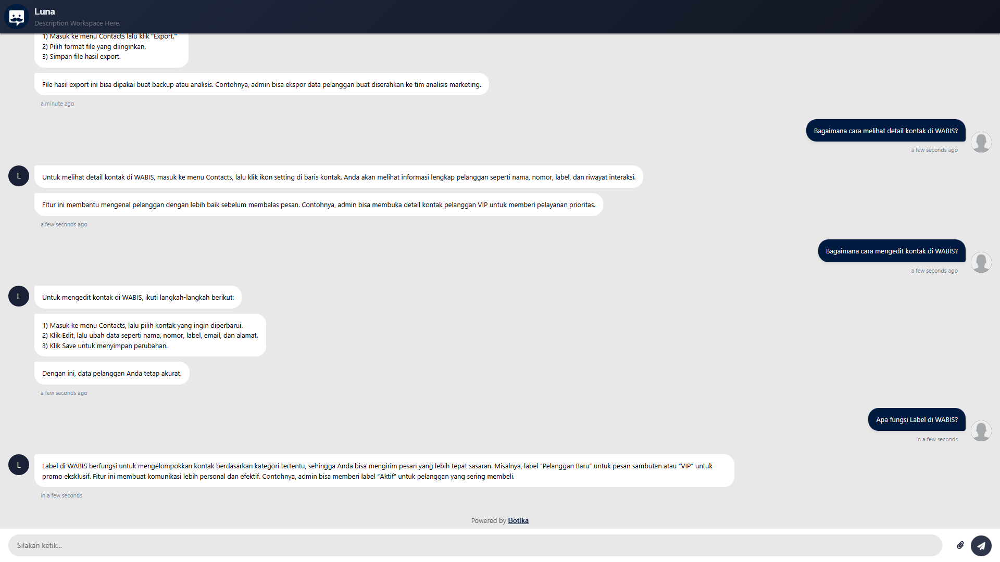 |
0.978 | PASS | 00:00:15 |
| Bagaimana cara membuat Label baru di WABIS? | Bagaimana cara membuat Label baru di WABIS? | Untuk membuat label: 1) masuk ke menu Label, lalu klik +Create 2) masukkan nama label dan simpan. 3) Setelah itu, label bisa langsung digunakan untuk menandai kontak. Contoh: admin membuat label “Pelanggan Ramadhan” untuk segmentasi khusus. | Untuk membuat label baru di WABIS, ikuti langkah-langkah berikut: 1) Masuk ke menu Label, lalu klik +Create 2) Masukkan nama label dan simpan Setelah itu, label bisa langsung digunakan untuk menandai kontak. Misalnya, Anda bisa membuat label “Pelanggan Ramadhan” untuk segmentasi khusus. | Auto: ✓ Jawaban sudah sangat baik dan lengkap. Semua informasi penting yang diharapkan sudah tercakup dengan akurat. |
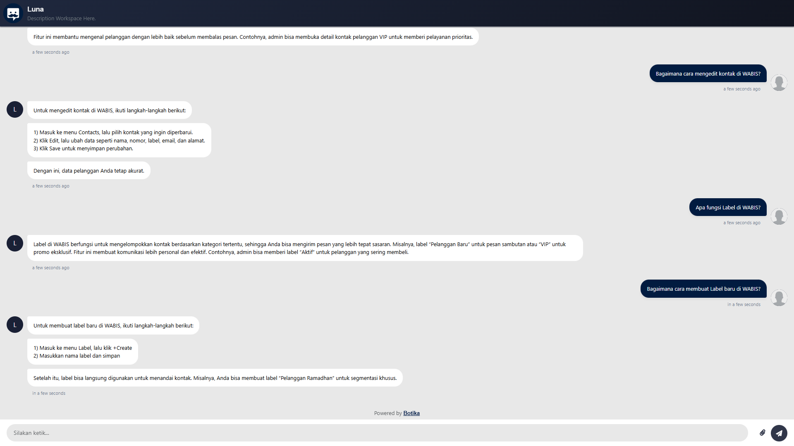 |
0.933 | PASS | 00:00:14 |
| Bagaimana cara menambahkan kontak ke Label? | Bagaimana cara menambahkan kontak ke Label? | 1) Masuk ke menu Label, lalu pilih label yang sudah dibuat. 2) tambahkan kontak yang ingin dikelompokkan dan simpan. Dengan ini, kontak masuk ke kategori tertentu sehingga memudahkan pengiriman pesan tersegmentasi. Contoh: pelanggan tetap ditambahkan ke label “Loyal Customer” agar mudah diberikan promo khusus. | 1) Masuk ke menu Label, lalu pilih label yang sudah dibuat. 2) Tambahkan kontak yang ingin dikelompokkan dan simpan. Dengan ini, kontak masuk ke kategori tertentu sehingga memudahkan pengiriman pesan tersegmentasi. Misalnya, pelanggan tetap bisa ditambahkan ke label “Loyal Customer” agar mudah diberikan promo khusus. | Auto: ✓ Jawaban sudah sangat baik dan lengkap. Semua informasi penting yang diharapkan sudah tercakup dengan akurat. | 0.973 | PASS | 00:00:37 | |
| Bagaimana cara mengedit Label? | Bagaimana cara mengedit Label? | Untuk mengubah nama label: 1) Masuk ke menu Label lalu pilih label yang ingin diubah. 2) Klik Edit, lalu ubah nama. 3) Klik Save untuk menyimpan. Fitur ini memudahkan jika Anda ingin menyesuaikan kategori. Contoh: label “Baru” diganti menjadi “New Customer” agar lebih mudah dipahami tim. | Untuk mengedit label: 1) Masuk ke menu Label lalu pilih label yang ingin diubah. 2) Klik Edit, lalu ubah nama. 3) Klik Save untuk menyimpan. | Auto: ⚠ Jawaban sudah benar untuk bagian untuk dan mengubah, tapi masih kurang lengkap. Perlu ditambahkan informasi tentang fitur, memudahkan, jika. |
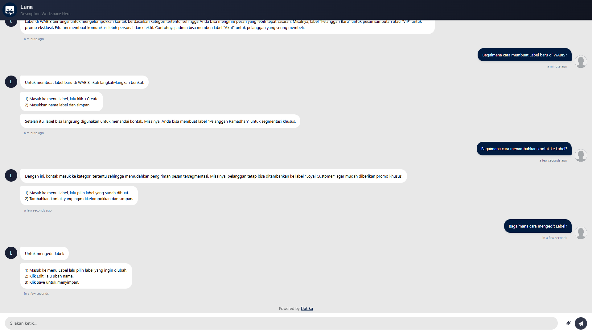 |
0.615 | FAILED | 00:00:12 |
| Bagaimana cara menghapus Label? | Bagaimana cara menghapus Label? | Untuk menghapus label: 1) Buka menu Label, lalu pilih label yang ingin dihapus. 2) Klik ikon trash, lalu konfirmasi. Label akan hilang dari daftar, tetapi kontak yang sudah ada tidak akan terhapus. Fitur ini berguna jika Anda ingin merapikan kategori yang sudah tidak relevan. Contoh: admin menghapus label “Pelanggan Trial” setelah periode uji coba selesai. | Untuk menghapus label: 1) Buka menu Label, lalu pilih label yang ingin dihapus. 2) Klik ikon trash, lalu konfirmasi. Label akan hilang dari daftar, tetapi kontak yang sudah ada tidak akan terhapus. | Auto: ✓ Jawaban sudah cukup lengkap mencakup poin-poin utama. Bisa ditambahkan detail tentang fitur, berguna untuk lebih komprehensif. |
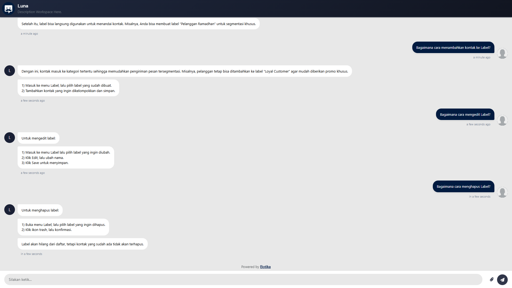 |
0.7 | PASS | 00:00:13 |
| Bagaimana cara mencari Label tertentu? | Bagaimana cara mencari Label tertentu? | Untuk menemukan label dengan cepat, gunakan kolom Search di menu Label. Cukup ketik nama label, sistem akan menampilkan hasil yang sesuai. Ini mempercepat navigasi jika Anda memiliki banyak label. Contoh: admin mencari label “VIP” untuk melihat daftar pelanggan prioritas. | Untuk menemukan label dengan cepat, gunakan kolom Search di menu Label. Cukup ketik nama label, sistem akan menampilkan hasil yang sesuai. Ini mempercepat navigasi jika Anda memiliki banyak label. | Auto: ✓ Jawaban sudah cukup lengkap mencakup poin-poin utama. Bisa ditambahkan detail tentang contoh, admin untuk lebih komprehensif. |
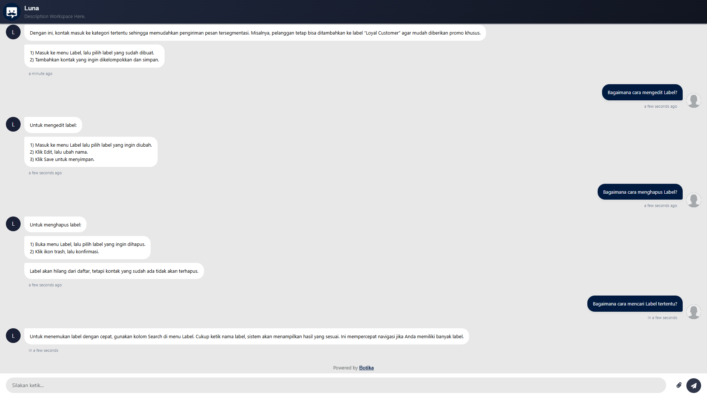 |
0.806 | PASS | 00:00:12 |
| Apa itu Media Library di WABIS? | Apa itu Media Library di WABIS? | Media Library adalah tempat penyimpanan file digital seperti gambar, video, dan dokumen yang bisa digunakan ulang dalam pesan atau broadcast. Dengan adanya Media Library, Anda tidak perlu mengunggah file berulang kali. Hal ini membuat kampanye lebih cepat dan efisien. Contoh: admin menyimpan banner promo bulanan di Media Library agar bisa digunakan kapan saja. | Media Library adalah tempat penyimpanan file digital seperti gambar, video, dan dokumen yang bisa digunakan ulang dalam pesan atau broadcast. Dengan adanya Media Library, Anda tidak perlu mengunggah file berulang kali. Hal ini membuat kampanye lebih cepat dan efisien. Contohnya, admin bisa menyimpan banner promo bulanan di Media Library agar bisa digunakan kapan saja. | Auto: ✓ Jawaban sudah sangat baik dan lengkap. Semua informasi penting yang diharapkan sudah tercakup dengan akurat. |
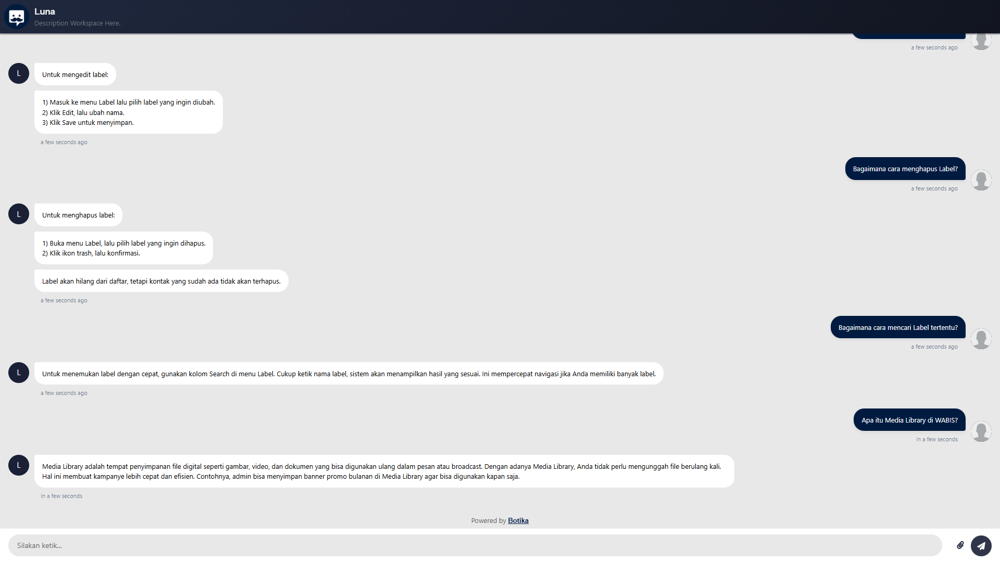 |
1 | PASS | 00:00:18 |
| Bagaimana cara menambahkan media di WABIS? | Bagaimana cara menambahkan media di WABIS? | Untuk menambahkan media: 1) Masuk ke menu Media Library lalu klik +Add Media. 2) Pilih file (gambar, video, atau dokumen) yang ingin diunggah. 3) Klik Upload, media akan tersimpan dan siap dipakai. Setelah tersimpan, media bisa dipakai langsung di template atau broadcast. Contoh: admin mengunggah katalog produk baru dalam bentuk PDF. | Untuk menambahkan media di WABIS, ikuti langkah berikut: 1. Masuk ke menu Media Library, lalu klik +Add Media. 2. Pilih file yang ingin diunggah, bisa berupa gambar, video, atau dokumen. 3. Klik Upload, dan media Anda akan tersimpan serta siap digunakan. Setelah tersimpan, media dapat dipakai langsung di template atau broadcast. Misalnya, admin bisa mengunggah katalog produk baru dalam bentuk PDF. | Auto: ✓ Jawaban sudah sangat baik dan lengkap. Semua informasi penting yang diharapkan sudah tercakup dengan akurat. |
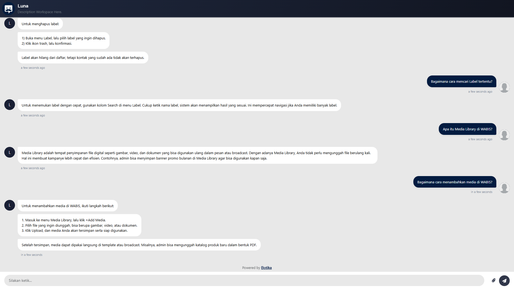 |
0.977 | PASS | 00:00:16 |
| Bagaimana cara menyalin URL media? | Bagaimana cara menyalin URL media? | Jika Anda ingin membagikan media dengan link, 1) Masuk ke menu Media Library lalu cari file yang ingin dibagikan. 2) Klik ikon clipboard di kolom Action. 3) URL otomatis tersalin dan bisa ditempel di chat atau sistem lain. URL ini bisa ditempel di chat atau sistem lain. Contoh: admin menyalin link gambar produk untuk dikirimkan ke pelanggan VIP. | Untuk menyalin URL media di WABIS, ini langkah-langkahnya: 1. Masuk ke menu Media Library dan cari file yang ingin dibagikan. 2. Klik ikon clipboard di kolom Action. 3. URL otomatis tersalin dan bisa ditempel di chat atau sistem lain. Contohnya, admin bisa menyalin link gambar produk untuk dikirimkan ke pelanggan VIP. | Auto: ✓ Jawaban sudah cukup lengkap mencakup poin-poin utama. Bisa ditambahkan detail tentang jika, anda untuk lebih komprehensif. |
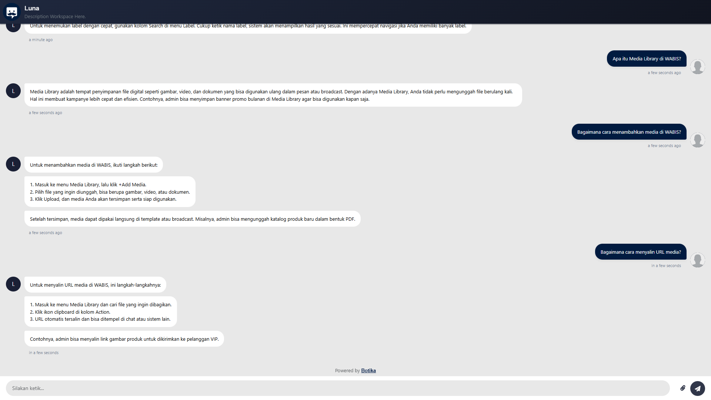 |
0.889 | PASS | 00:00:14 |
| Bagaimana cara melihat preview media? | Bagaimana cara melihat preview media? | Untuk memastikan file sudah benar sebelum dipakai, klik ikon preview di kolom Action Media Library. Anda bisa melihat tampilan gambar, video, atau dokumen. Fitur ini mencegah kesalahan sebelum file dikirim ke banyak pelanggan. Contoh: admin mengecek preview banner promo sebelum dipakai dalam broadcast. | Untuk melihat preview media, Anda bisa: 1. Klik ikon preview di kolom Action Media Library. 2. Media yang dipilih akan muncul di sisi kanan halaman. 3. Untuk membuka di tab baru, klik ikon panah di sebelah kanan. 4. Untuk menutup, klik ikon tutup di sebelah kanan. Ini membantu memastikan file benar sebelum dipakai. | Auto: ⚠ Jawaban hanya mencakup sebagian kecil informasi (untuk dan memastikan). Banyak informasi penting yang belum disebutkan seperti sudah, tampilan, gambar. |
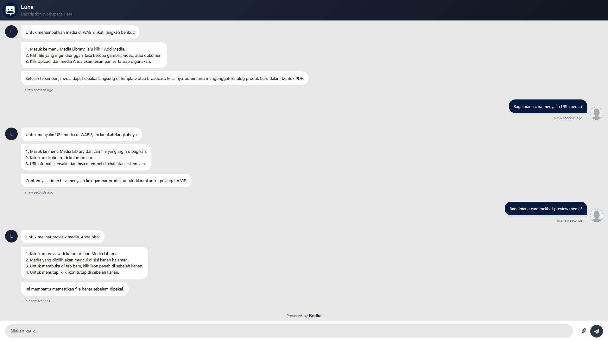 |
0.55 | FAILED | 00:00:14 |
| Bagaimana cara mengunduh media dari WABIS? | Bagaimana cara mengunduh media dari WABIS? | 1) Masuk ke menu Media Library lalu cari file yang dibutuhkan. 2) Klik ikon Download di kolom Action. 3) File otomatis tersimpan ke perangkat Anda. Fitur ini berguna jika Anda ingin memakai file untuk kebutuhan lain di luar WABIS. Contoh: admin mengunduh video iklan untuk diunggah ke media sosial. | Berikut langkah-langkahnya: 1. Masuk ke menu Media Library dan cari file yang Anda butuhkan. 2. Klik ikon Download di kolom Action. 3. File akan otomatis tersimpan ke perangkat Anda. Fitur ini memudahkan jika Anda ingin menggunakan file untuk keperluan lain di luar WABIS. | Auto: ✓ Jawaban sudah cukup lengkap mencakup poin-poin utama. Bisa ditambahkan detail tentang lalu, berguna untuk lebih komprehensif. |
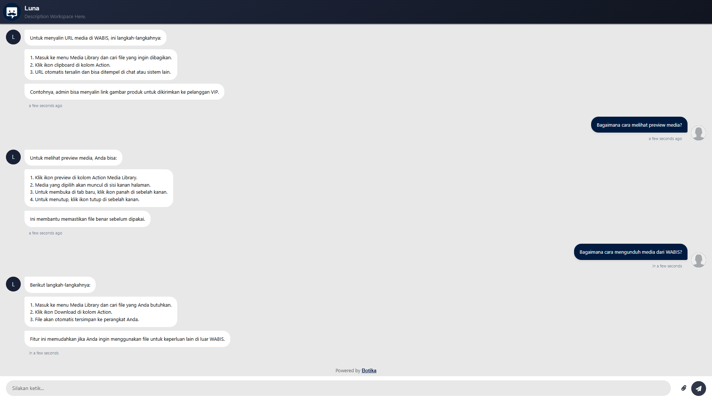 |
0.775 | PASS | 00:00:13 |
| Bagaimana cara menghapus media dari WABIS? | Bagaimana cara menghapus media dari WABIS? | Untuk menghapus file: 1) buka Media Library, lalu pilih file. 2) klik ikon trash, setelah itu konfirmasi. File akan terhapus permanen dari sistem. Hal ini membantu menjaga Media Library tetap rapi dan relevan. Contoh: admin menghapus dokumen katalog lama yang sudah tidak dipakai. | Untuk menghapus file di WABIS: 1) Buka Media Library dan pilih file yang ingin dihapus. 2) Klik ikon trash dan konfirmasi penghapusan. File akan terhapus permanen dari sistem. | Auto: ⚠ Jawaban sudah benar untuk bagian untuk dan menghapus, tapi masih kurang lengkap. Perlu ditambahkan informasi tentang lalu, setelah, membantu. |
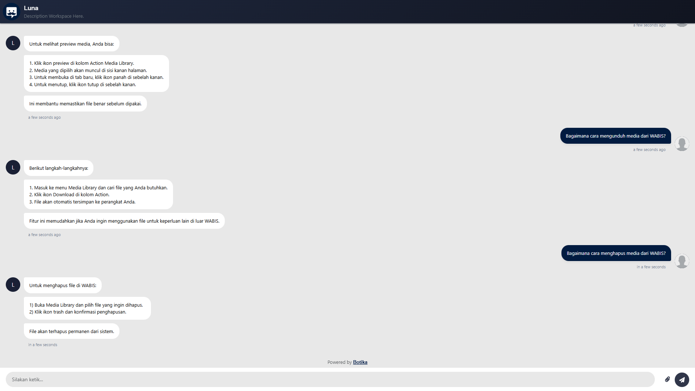 |
0.622 | FAILED | 00:00:12 |
| Apa itu Reports di WABIS? | Apa itu Reports di WABIS? | Reports adalah menu untuk melihat laporan aktivitas komunikasi di WABIS. Ada berbagai jenis laporan seperti percakapan, broadcast, hingga pesan flow. Dengan Reports, Anda bisa menganalisis performa komunikasi bisnis dan membuat keputusan berbasis data. Contoh: tim marketing melihat Reports untuk menilai apakah kampanye promosi berhasil. | Reports di WABIS adalah menu untuk melihat laporan aktivitas komunikasi, seperti percakapan, broadcast, dan pesan flow. Dengan fitur ini, Anda bisa menganalisis performa komunikasi bisnis dan mengambil keputusan berdasarkan data. Misalnya, tim marketing bisa melihat Reports untuk mengevaluasi keberhasilan kampanye promosi. | Auto: ✓ Jawaban sudah cukup lengkap mencakup poin-poin utama. Bisa ditambahkan detail tentang berbagai, jenis untuk lebih komprehensif. |
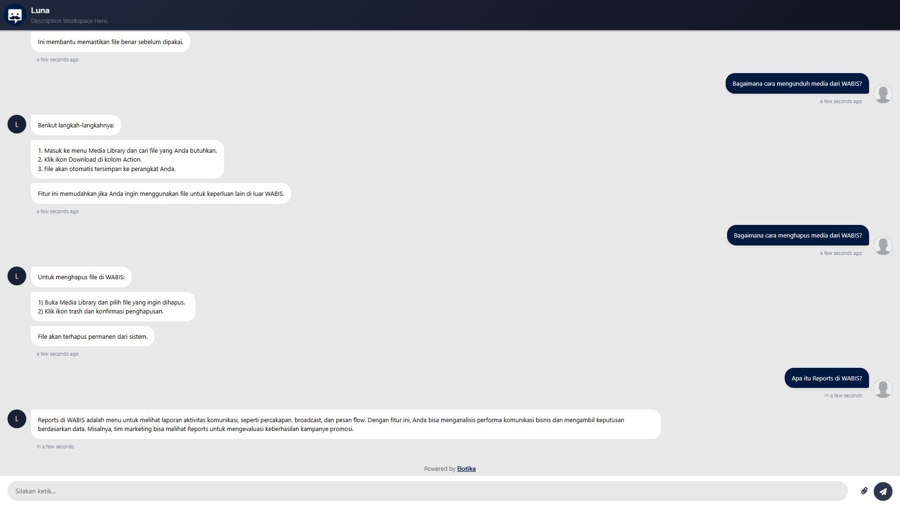 |
0.8 | PASS | 00:00:13 |
| Bagaimana cara membuat Report baru di WABIS? | Bagaimana cara membuat Report baru di WABIS? | Untuk membuat laporan: 1) buka menu Reports, lalu klik Create Report. 2) pilih periode waktu yang ingin dianalisis dan simpan. Laporan akan dibuat otomatis berdasarkan data sistem. Ini membantu manajemen memantau performa komunikasi bisnis dalam periode tertentu. Contoh: admin membuat laporan mingguan untuk diserahkan ke supervisor. | Untuk membuat Report baru di WABIS: 1) Buka menu Reports dan klik Create Report. 2) Pilih periode waktu yang ingin dianalisis dan simpan. Laporan akan otomatis dibuat berdasarkan data sistem, membantu manajemen memantau performa komunikasi bisnis dalam periode tertentu. Misalnya, admin bisa membuat laporan mingguan untuk diserahkan ke supervisor. | Auto: ✓ Jawaban sudah sangat baik dan lengkap. Semua informasi penting yang diharapkan sudah tercakup dengan akurat. |
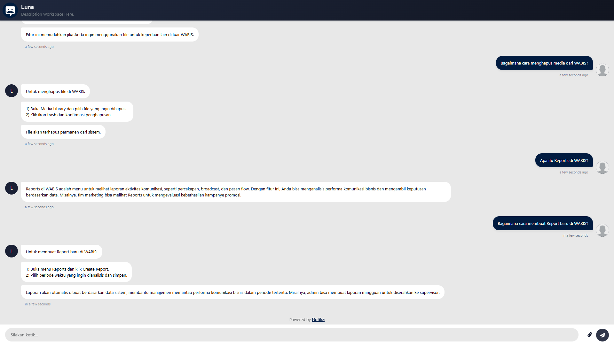 |
0.951 | PASS | 00:00:37 |
| Bagaimana cara mengunduh Report di WABIS? | Bagaimana cara mengunduh Report di WABIS? | 1) Buka menu Reports, setelah itu pilih laporan yang diinginkan. 2) klik ikon download dan simpan file ke perangkat. File biasanya dalam format Excel/CSV agar mudah dianalisis. Contoh: admin mengunduh laporan bulanan untuk dipresentasikan di rapat manajemen. | Cara mengunduh Report di WABIS: 1) Buka menu Reports dan pilih laporan yang diinginkan. 2) Klik ikon download dan simpan file ke perangkat. Biasanya, file dalam format Excel/CSV agar mudah dianalisis. Contohnya, admin bisa mengunduh laporan bulanan untuk dipresentasikan di rapat manajemen. | Auto: ✓ Jawaban sudah sangat baik dan lengkap. Semua informasi penting yang diharapkan sudah tercakup dengan akurat. |
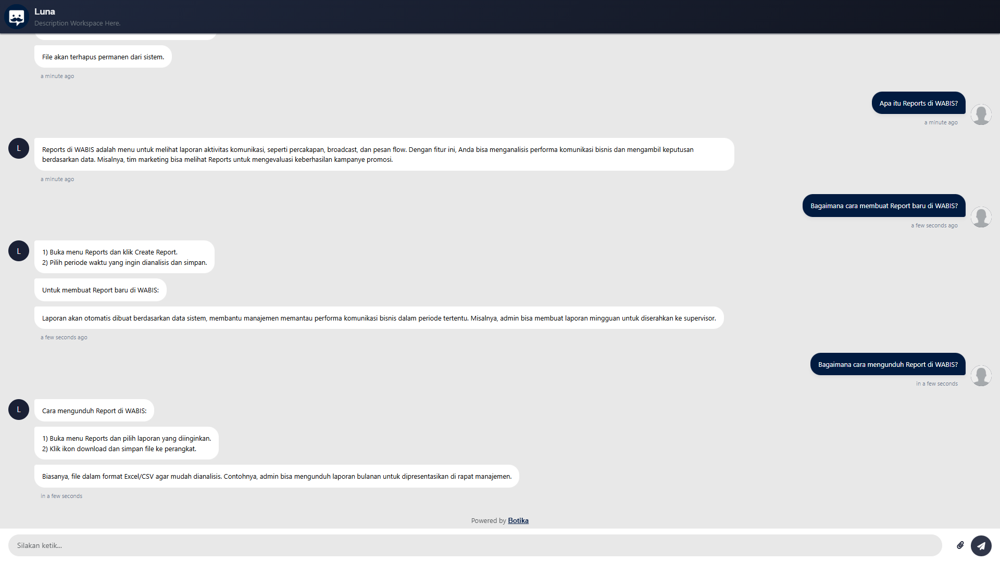 |
0.968 | PASS | 00:00:13 |
| Apa itu Conversation Report? | Apa itu Conversation Report? | Conversation Report adalah laporan yang berisi data percakapan dengan pelanggan. Laporan ini bisa difilter berdasarkan nomor telepon atau rentang tanggal. Conversation Report membantu tim memahami intensitas interaksi pelanggan. Contoh: admin memfilter laporan percakapan seminggu terakhir untuk melihat jumlah komplain. | Conversation Report adalah laporan yang berisi data percakapan dengan pelanggan. Laporan ini bisa difilter berdasarkan nomor telepon atau rentang tanggal. Conversation Report membantu tim memahami intensitas interaksi pelanggan. Misalnya, admin bisa memfilter laporan percakapan seminggu terakhir untuk melihat jumlah komplain. | Auto: ✓ Jawaban sudah sangat baik dan lengkap. Semua informasi penting yang diharapkan sudah tercakup dengan akurat. |
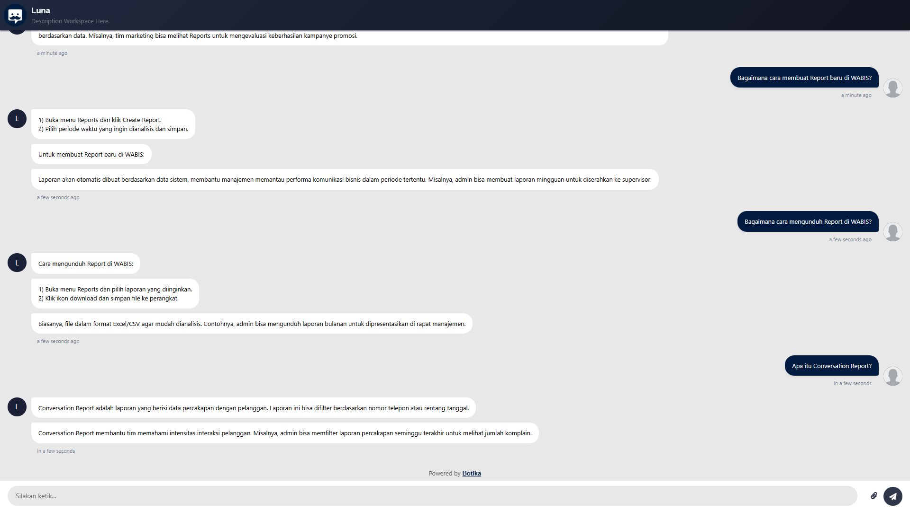 |
0.973 | PASS | 00:00:37 |
| Apa itu Broadcast Report? | Apa itu Broadcast Report? | Broadcast Report adalah laporan khusus untuk pesan massal yang dikirim melalui fitur Broadcast. Laporan ini menunjukkan jumlah pesan terkirim, terbaca, atau gagal. Data ini penting untuk mengevaluasi efektivitas kampanye. Contoh: tim marketing melihat Broadcast Report “Promo Lebaran” untuk menilai tingkat keterbacaan. | Broadcast Report adalah laporan khusus untuk pesan massal yang dikirim melalui fitur Broadcast. Laporan ini menunjukkan jumlah pesan terkirim, terbaca, atau gagal. | Auto: ⚠ Jawaban sudah benar untuk bagian broadcast dan report, tapi masih kurang lengkap. Perlu ditambahkan informasi tentang data, penting, mengevaluasi. | 0.684 | FAILED | 00:00:13 | |
| Apa itu General Message Report? | Apa itu General Message Report? | General Message Report adalah laporan yang menampilkan semua pesan berdasarkan tipe (Marketing, Utility, Authentication), nomor pengirim, dan tanggal. Laporan ini berguna untuk memantau volume pesan secara umum. Contoh: admin menggunakan laporan ini untuk melihat total pesan Utility yang dikirim dalam sebulan. | General Message Report adalah laporan yang menampilkan semua pesan berdasarkan tipe (Marketing, Utility, Authentication), nomor pengirim, dan tanggal. Ini berguna untuk memantau volume pesan secara umum. | Auto: ✓ Jawaban sudah cukup lengkap mencakup poin-poin utama. Bisa ditambahkan detail tentang contoh, admin untuk lebih komprehensif. | 0.789 | PASS | 00:00:13 | |
| Apa itu Flow Message Report? | Apa itu Flow Message Report? | Flow Message Report adalah laporan untuk pesan otomatis dengan alur tertentu (flow). Laporan ini membantu mengevaluasi campaign yang berbasis automation. Anda bisa melihat berapa banyak pelanggan yang menyelesaikan flow tertentu. Contoh: campaign registrasi event dievaluasi dengan Flow Message Report. | Flow Message Report adalah laporan untuk pesan otomatis dengan alur tertentu. Laporan ini membantu mengevaluasi campaign berbasis automation dengan melihat berapa banyak pelanggan yang menyelesaikan flow tertentu. | Auto: ✓ Jawaban sudah cukup lengkap mencakup poin-poin utama. Bisa ditambahkan detail tentang anda, bisa untuk lebih komprehensif. | 0.842 | PASS | 00:00:12 | |
| Bagaimana cara mengekspor Conversation Report? | Bagaimana cara mengekspor Conversation Report? | Anda bisa mengekspor laporan percakapan untuk kebutuhan arsip maupun analisis lebih lanjut. Berikut langkah yang dapat diikuti : 1) Masuk ke menu Conversation Report lalu klik tombol Export. 2) Pilih format file (Excel/CSV). 3) Unduh file untuk disimpan atau dianalisis. Data percakapan ini bisa digunakan untuk arsip atau analisis lebih lanjut. Contoh: admin mengekspor percakapan bulan lalu untuk laporan internal. | Anda bisa mengekspor laporan percakapan dengan langkah-langkah berikut: 1) Masuk ke menu Conversation Report lalu klik tombol Export. 2) Pilih format file (Excel/CSV). 3) Unduh file untuk disimpan atau dianalisis lebih lanjut. | Auto: ✓ Jawaban sudah cukup lengkap mencakup poin-poin utama. Bisa ditambahkan detail tentang arsip, maupun untuk lebih komprehensif. | 0.778 | PASS | 00:00:37 | |
| Bagaimana cara mengekspor Broadcast Report? | Bagaimana cara mengekspor Broadcast Report? | Jika ingin menyimpan data kampanye untuk analisis lebih lanjut, Anda bisa mengekspor laporan broadcast dalam bentuk file. Ikuti langkah berikut : 1)Masuk ke menu Broadcast Report 2) klik tombol Export, lalu simpan file laporan. Data yang diunduh bisa dipakai untuk membandingkan performa kampanye antar periode. Contoh: admin mengunduh Broadcast Report “Promo Natal” untuk dibandingkan dengan tahun lalu. | Untuk mengekspor Broadcast Report, ikuti langkah berikut: 1) Masuk ke menu Broadcast Report. 2) Klik tombol Export, lalu simpan file laporan. Data yang diunduh bisa digunakan untuk membandingkan performa kampanye antar periode. | Auto: ⚠ Jawaban sudah benar untuk bagian data dan kampanye, tapi masih kurang lengkap. Perlu ditambahkan informasi tentang jika, ingin, menyimpan. | 0.667 | FAILED | 00:00:12 | |
| Apa itu menu Settings di WABIS? | Apa itu menu Settings di WABIS? | Settings adalah menu untuk mengelola akun dan layanan, termasuk informasi paket aktif, riwayat tagihan dan saldo kredit. Settings memastikan pengguna bisa mengontrol penggunaan layanan sesuai kebutuhan. Contoh: admin memeriksa Settings untuk melihat paket yang digunakan. | Settings di WABIS adalah menu untuk mengelola akun dan layanan. Di sini, Anda bisa melihat informasi paket aktif, riwayat tagihan, dan saldo kredit. Dengan Settings, Anda bisa mengontrol penggunaan layanan sesuai kebutuhan. | Auto: ✓ Jawaban sudah cukup lengkap mencakup poin-poin utama. Bisa ditambahkan detail tentang termasuk, memastikan untuk lebih komprehensif. | 0.818 | PASS | 00:00:13 | |
| Apa fungsi Your Subscription di Settings? | Apa fungsi Your Subscription di Settings? | Fitur ini menampilkan detail paket layanan yang sedang aktif beserta masa berlakunya. Dari sini, Anda bisa memastikan paket yang digunakan masih sesuai dengan kebutuhan bisnis. Contoh: Admin memeriksa masa aktif langganan untuk memastikan layanan tetap berjalan tanpa gangguan. | Fitur Your Subscription di Settings menampilkan detail paket layanan yang sedang aktif beserta masa berlakunya. Dari sini, Anda bisa memastikan paket yang digunakan masih sesuai dengan kebutuhan bisnis. | Auto: ✓ Jawaban sudah cukup lengkap mencakup poin-poin utama. Bisa ditambahkan detail tentang contoh, admin untuk lebih komprehensif. | 0.757 | PASS | 00:00:13 | |
| Apa fungsi Invoices di Settings? | Apa fungsi Invoices di Settings? | Invoices adalah daftar tagihan yang sudah diterbitkan. Anda bisa melihat, mengunduh, atau mencetak tagihan dari sini. Fitur ini memudahkan pencatatan keuangan bisnis. Contoh: tim akuntansi mengunduh invoice untuk arsip pembukuan bulanan. | Invoices di Settings adalah daftar tagihan yang sudah diterbitkan. Anda bisa melihat, mengunduh, atau mencetak tagihan dari sini. Fitur ini memudahkan pencatatan keuangan bisnis Anda. | Auto: ✓ Jawaban sudah cukup lengkap mencakup poin-poin utama. Bisa ditambahkan detail tentang contoh, akuntansi untuk lebih komprehensif. | 0.793 | PASS | 00:00:10 | |
| Apa fungsi Credits di Settings? | Apa fungsi Credits di Settings? | Credits adalah saldo yang digunakan untuk membayar layanan tertentu di WABIS, termasuk pengiriman pesan. Anda bisa menambah saldo lewat top-up agar layanan tidak terhenti. Credits ini penting untuk menjaga kelancaran komunikasi bisnis. Contoh: admin menambahkan 500.000 kredit agar kampanye promo bisa terus berjalan. | Credits di Settings adalah saldo yang digunakan untuk membayar layanan tertentu di WABIS, termasuk pengiriman pesan. Anda bisa menambah saldo lewat top-up agar layanan tidak terhenti. Credits ini penting untuk menjaga kelancaran komunikasi bisnis Anda. | Auto: ✓ Jawaban sudah cukup lengkap mencakup poin-poin utama. Bisa ditambahkan detail tentang contoh, admin untuk lebih komprehensif. | 0.846 | PASS | 00:00:12 | |
| Bagaimana cara melihat profil akun di WABIS? | Bagaimana cara melihat profil akun di WABIS? | Klik ikon profil di bagian bawah sidebar, kemudian profil akan menampilkan nama pengguna dan email. Dari sini, Anda bisa memastikan akun yang dipakai benar. Contoh: admin mengecek profil untuk memastikan sedang login dengan akun bisnis, bukan pribadi. | Untuk melihat profil akun di WABIS, klik ikon profil di bagian bawah sidebar. Profil akan menampilkan nama pengguna dan email. Dari sini, Anda bisa memastikan akun yang dipakai adalah akun bisnis yang benar. | Auto: ✓ Jawaban sudah cukup lengkap mencakup poin-poin utama. Bisa ditambahkan detail tentang contoh, admin untuk lebih komprehensif. | 0.829 | PASS | 00:00:12 | |
| Apa fungsi notifikasi di WABIS? | Apa fungsi notifikasi di WABIS? | Notifikasi berfungsi untuk memberikan informasi real-time mengenai status broadcast, atau update sistem. Dengan notifikasi, pengguna bisa lebih cepat merespons. Contoh: admin segera tahu ada pesan masuk dari pelanggan VIP melalui notifikasi. | Notifikasi di WABIS berfungsi untuk memberikan informasi real-time mengenai status broadcast atau update sistem. Dengan notifikasi, Anda bisa merespons lebih cepat. Misalnya, admin segera tahu ada pesan masuk dari pelanggan VIP melalui notifikasi. | Auto: ✓ Jawaban sudah sangat baik dan lengkap. Semua informasi penting yang diharapkan sudah tercakup dengan akurat. | 0.933 | PASS | 00:00:13 | |
| Bagaimana cara logout dari akun WABIS? | Bagaimana cara logout dari akun WABIS? | Untuk menjaga keamanan, terutama jika perangkat digunakan bergantian, sebaiknya selalu melakukan logout setelah selesai menggunakan sistem. Berikut caranya : 1) Klik ikon profil di sidebar 2) pilih Logout 3) konfirmasi. Logout penting untuk menjaga keamanan akun, terutama jika perangkat dipakai bergantian. Contoh: admin logout setelah shift selesai agar akun tidak disalahgunakan. | Untuk logout dari akun WABIS, Anda bisa mengikuti langkah-langkah berikut: 1) Klik ikon profil di sidebar. 2) Pilih Logout. 3) Konfirmasi. Logout penting dilakukan untuk menjaga keamanan akun, terutama jika perangkat digunakan bergantian. | Auto: ⚠ Jawaban sudah benar untuk bagian untuk dan menjaga, tapi masih kurang lengkap. Perlu ditambahkan informasi tentang sebaiknya, selalu, melakukan. | 0.674 | FAILED | 00:00:37 | |
| Apa itu Insight di WABIS? | Apa itu Insight di WABIS? | Insight adalah fitur analitik yang menampilkan ringkasan data penggunaan, seperti jumlah pesan terkirim, terbaca, gagal, jumlah kontak, hingga broadcast yang sudah dijalankan. Insight membantu bisnis mengevaluasi performa komunikasi dengan pelanggan. Contoh: tim marketing melihat Insight untuk menilai apakah kampanye baru efektif. | Insight di WABIS adalah fitur analitik yang menampilkan ringkasan data penggunaan, seperti jumlah pesan terkirim, terbaca, gagal, jumlah kontak, hingga broadcast yang sudah dijalankan. Insight membantu bisnis mengevaluasi performa komunikasi dengan pelanggan. Misalnya, tim marketing dapat melihat Insight untuk menilai apakah kampanye baru efektif. | Auto: ✓ Jawaban sudah sangat baik dan lengkap. Semua informasi penting yang diharapkan sudah tercakup dengan akurat. | 0.975 | PASS | 00:00:13 | |
| Apa saja data yang bisa dilihat di Insight? | Apa saja data yang bisa dilihat di Insight? | Insight menampilkan: - Jumlah Message Templates - Jumlah Phone Numbers - Jumlah Broadcast - Total Contacts - Overall Message Usage dalam periode waktu tertentu (misalnya, "Last 1 Hours") - Total pesan Sent (Terkirim) - Total pesan Delivered (Diterima) - Total pesan Read (Terbaca) - Total pesan Failed (Gagal) | Data yang bisa dilihat di Insight mencakup: - Jumlah Message Templates - Jumlah Phone Numbers - Jumlah Broadcast - Total Contacts - Overall Message Usage dalam periode waktu tertentu (misalnya, "Last 1 Hours") - Total pesan Sent (Terkirim) - Total pesan Delivered (Diterima) - Total pesan Read (Terbaca) - Total pesan Failed (Gagal) | Auto: ✓ Jawaban sudah sangat baik dan lengkap. Semua informasi penting yang diharapkan sudah tercakup dengan akurat. | 0.974 | PASS | 00:00:16 | |
| Apakah Insight bisa difilter berdasarkan waktu? | Apakah Insight bisa difilter berdasarkan waktu? | Bisa. Insight dapat difilter untuk periode tertentu seperti 1, 3, 6, atau 12 jam terakhir. Hal ini memudahkan pengguna mengevaluasi performa kampanye dalam rentang waktu pendek. Contoh: admin memantau broadcast promo yang dikirim 6 jam terakhir. | Bisa. Insight dapat difilter untuk periode tertentu seperti 1, 3, 6, atau 12 jam terakhir. Ini membantu pengguna mengevaluasi performa kampanye dalam rentang waktu pendek. Misalnya, admin bisa memantau broadcast promo yang dikirim 6 jam terakhir. | Auto: ✓ Jawaban sudah sangat baik dan lengkap. Semua informasi penting yang diharapkan sudah tercakup dengan akurat. | 0.926 | PASS | 00:00:13 | |
| Bagaimana cara menggunakan Insight untuk evaluasi? | Bagaimana cara menggunakan Insight untuk evaluasi? | Menu Insight membantu Anda memahami pola dari aktivitas pesan. Dengan data ini, Anda bisa menentukan strategi pengiriman yang lebih efektif. Ikuti langkah berikut : 1)Buka menu Insight. 2) pilih periode waktu. 3) Perhatikan tren jumlah pesan terkirim, terbaca, atau gagal. Dari data tersebut, Anda bisa mengidentifikasi pola, misalnya jam paling efektif untuk mengirim pesan. Contoh: admin menemukan bahwa pesan paling banyak dibaca pada jam 8 malam. | Berikut cara menggunakan Insight untuk evaluasi: 1) Buka menu Insight. 2) Pilih periode waktu. 3) Perhatikan tren jumlah pesan terkirim, terbaca, atau gagal. Dari data tersebut, Anda bisa mengidentifikasi pola, misalnya jam paling efektif untuk mengirim pesan. Contohnya, admin menemukan bahwa pesan paling banyak dibaca pada jam 8 malam. | Auto: ✓ Jawaban sudah cukup lengkap mencakup poin-poin utama. Bisa ditambahkan detail tentang membantu, memahami untuk lebih komprehensif. | 0.814 | PASS | 00:00:37 | |
| Apakah semua Message Template langsung bisa dipakai? | Apakah semua Message Template langsung bisa dipakai? | Tidak. Setelah dibuat, template harus melewati proses review oleh Meta. Hanya template dengan status Active yang bisa digunakan. Template yang ditolak harus direvisi sesuai aturan. Contoh: template promo hanya bisa digunakan setelah disetujui Meta. | Tidak. Setelah dibuat, template harus melewati proses review oleh Meta. Hanya template dengan status Active yang bisa digunakan. Template yang ditolak harus direvisi sesuai aturan. Contoh: template promo hanya bisa digunakan setelah disetujui Meta. | Auto: ✓ Jawaban sudah sangat baik dan lengkap. Semua informasi penting yang diharapkan sudah tercakup dengan akurat. | 1 | PASS | 00:00:13 | |
| Bagaimana cara memperbarui Message Template di WABIS? | Bagaimana cara memperbarui Message Template di WABIS? | Message Template di WABIS tidak bisa diedit atau diperbarui setelah dibuat. Jika ada perubahan yang ingin dilakukan, Anda perlu membuat template baru dengan versi yang sudah disesuaikan. Hal ini mengikuti kebijakan dari Meta untuk menjaga konsistensi dan validasi konten pesan. | Message Template di WABIS tidak bisa diedit atau diperbarui setelah dibuat. Kalau ada perubahan yang pengen dilakukan, Anda perlu buat template baru dengan versi yang udah disesuaikan. Ini sesuai kebijakan dari Meta untuk menjaga konsistensi dan validasi konten pesan. | Auto: ✓ Jawaban sudah sangat baik dan lengkap. Semua informasi penting yang diharapkan sudah tercakup dengan akurat. | 0.914 | PASS | 00:00:14 | |
| Apa itu opsi Header, Footer, dan Button di Message Template? | Apa itu opsi Header, Footer, dan Button di Message Template? | Header berfungsi sebagai judul pesan, Footer untuk catatan tambahan, dan Button untuk memberikan aksi cepat seperti “Pesan Sekarang” atau “Kunjungi Website”. Elemen ini membuat pesan lebih menarik dan interaktif. Contoh: template promo dengan header “Diskon 50%” dan tombol “Beli Sekarang”. | Header berfungsi sebagai judul pesan, Footer untuk catatan tambahan, dan Button untuk memberikan aksi cepat seperti “Pesan Sekarang” atau “Kunjungi Website”. Elemen ini bikin pesan lebih menarik dan interaktif. Misalnya, template promo dengan header “Diskon 50%” dan tombol “Beli Sekarang”. | Auto: ✓ Jawaban sudah sangat baik dan lengkap. Semua informasi penting yang diharapkan sudah tercakup dengan akurat. | 0.943 | PASS | 00:00:15 | |
| Mengapa penting memilih tipe Message Template yang sesuai? | Mengapa penting memilih tipe Message Template yang sesuai? | Karena tiap tipe (Marketing, Utility, Authentication) punya aturan penggunaan yang berbeda. Jika salah pilih, template bisa ditolak Meta. Pemilihan tipe yang tepat juga membuat pesan lebih efektif dan sesuai konteks. Contoh: gunakan tipe Utility untuk pesan konfirmasi pesanan, bukan Marketing. | Karena setiap tipe (Marketing, Utility, Authentication) punya aturan penggunaan yang beda. Salah pilih bisa bikin template ditolak Meta. Pilihan yang tepat bikin pesan lebih efektif dan sesuai konteks. Misalnya, gunakan tipe Utility untuk pesan konfirmasi pesanan, bukan Marketing. | Auto: ✓ Jawaban sudah cukup lengkap mencakup poin-poin utama. Bisa ditambahkan detail tentang jika, pemilihan untuk lebih komprehensif. | 0.872 | PASS | 00:00:14 | |
| Apa fungsi menu Phone Number di WABIS? | Apa fungsi menu Phone Number di WABIS? | Menu Phone Number digunakan untuk memantau nomor WhatsApp Business yang terhubung ke akun. Dari sini, Anda bisa menambah atau mengganti nomor. Contoh: perusahaan menambahkan nomor cabang baru untuk melayani pelanggan di wilayah tertentu. | Menu Phone Number dipakai buat mantau nomor WhatsApp Business yang terhubung ke akun. Dari sini, Anda bisa nambah atau ganti nomor. Misalnya, perusahaan nambah nomor cabang baru buat layani pelanggan di wilayah tertentu. | Auto: ✓ Jawaban sudah sangat baik dan lengkap. Semua informasi penting yang diharapkan sudah tercakup dengan akurat. | 0.903 | PASS | 00:00:12 | |
| Apa kegunaan tombol Sync di Phone Number? | Apa kegunaan tombol Sync di Phone Number? | Tombol Sync berfungsi memperbarui daftar nomor yang sudah terhubung dengan akun. Jika ada nomor baru ditambahkan atau status berubah, Sync memastikan data di sistem selalu terbaru. Contoh: admin klik Sync setelah menambahkan nomor baru di Facebook Business Manager. | Tombol Sync berguna buat memperbarui daftar nomor yang terhubung dengan akun. Kalau ada nomor baru ditambah atau status berubah, Sync pastiin data di sistem selalu terbaru. Contohnya, admin klik Sync setelah menambah nomor baru di Facebook Business Manager. | Auto: ✓ Jawaban sudah cukup lengkap mencakup poin-poin utama. Bisa ditambahkan detail tentang berfungsi, sudah untuk lebih komprehensif. | 0.886 | PASS | 00:00:14 | |
| Apa itu API di menu Phone Number? | Apa itu API di menu Phone Number? | API memungkinkan integrasi WABIS dengan sistem lain seperti website atau aplikasi internal. Dengan API, pengiriman pesan bisa otomatis sesuai aktivitas tertentu. Contoh: sistem e-commerce otomatis mengirim pesan konfirmasi pesanan ke pelanggan. | API di menu Phone Number memungkinkan integrasi WABIS dengan sistem lain, seperti website atau aplikasi internal. Jadi, pengiriman pesan bisa otomatis sesuai aktivitas tertentu. Misalnya, sistem e-commerce otomatis kirim pesan konfirmasi pesanan ke pelanggan. | Auto: ✓ Jawaban sudah sangat baik dan lengkap. Semua informasi penting yang diharapkan sudah tercakup dengan akurat. | 0.964 | PASS | 00:00:13 | |
| Apa fungsi Webhook pada Phone Number? | Apa fungsi Webhook pada Phone Number? | Webhook adalah mekanisme untuk mengirimkan notifikasi otomatis dari WABIS ke sistem lain. Dengan webhook, Anda bisa menghubungkan WABIS ke aplikasi CRM, ERP, atau sistem internal. Contoh: setiap pesan masuk otomatis dicatat di CRM perusahaan. | Webhook pada Phone Number adalah mekanisme buat ngirim notifikasi otomatis dari WABIS ke sistem lain. Dengan webhook, Anda bisa hubungkan WABIS ke aplikasi CRM, ERP, atau sistem internal. Misalnya, setiap pesan masuk otomatis dicatat di CRM perusahaan. | Auto: ✓ Jawaban sudah sangat baik dan lengkap. Semua informasi penting yang diharapkan sudah tercakup dengan akurat. | 0.929 | PASS | 00:00:14 | |
| Apakah Broadcast bisa dikirim tanpa label kontak? | Apakah Broadcast bisa dikirim tanpa label kontak? | Bisa. Selain menggunakan label, Anda juga bisa mengunggah file berisi daftar nomor untuk ditargetkan dalam broadcast. Ini berguna jika daftar pelanggan sudah ada di luar WABIS. Contoh: admin mengunggah file Excel berisi nomor peserta seminar. | Bisa banget! Selain pakai label, Anda juga bisa unggah file berisi daftar nomor yang mau ditargetkan dalam broadcast. Ini sangat berguna kalau daftar pelanggannya udah ada di luar WABIS. Misalnya, admin unggah file Excel berisi nomor peserta seminar. | Auto: ✓ Jawaban sudah cukup lengkap mencakup poin-poin utama. Bisa ditambahkan detail tentang menggunakan, untuk untuk lebih komprehensif. | 0.875 | PASS | 00:00:13 | |
| Apakah pesan Broadcast harus pakai template? | Apakah pesan Broadcast harus pakai template? | Ya. Semua pesan broadcast wajib menggunakan Message Template yang sudah disetujui Meta. Ini adalah aturan resmi agar pesan bisnis tidak dianggap spam. Contoh: broadcast promo hanya bisa dikirim dengan template promosi yang valid. | Ya, semua pesan broadcast wajib pakai Message Template yang sudah disetujui Meta. Ini biar pesan bisnis Anda nggak dianggap spam. Misalnya, kalau mau kirim promo, harus pakai template promosi yang valid. | Auto: ✓ Jawaban sudah cukup lengkap mencakup poin-poin utama. Bisa ditambahkan detail tentang menggunakan, adalah untuk lebih komprehensif. | 0.71 | PASS | 00:00:14 | |
| Bagaimana cara memantau status Broadcast? | Bagaimana cara memantau status Broadcast? | Untuk mengetahui hasil pengiriman pesan massal, Anda bisa melihat detail status di menu Broadcast. Ikuti langkah berikut : 1) Masuk ke menu Broadcast 2) klik broadcast tertentu 3) lihat detail status pesan (terkirim, terbaca, gagal). Informasi ini penting untuk menilai keberhasilan kampanye. Contoh: admin mengecek apakah pesan “Promo Akhir Tahun” sudah terbaca oleh mayoritas pelanggan. | Untuk memantau status Broadcast, Anda bisa ikuti langkah-langkah ini: 1) Masuk ke menu Broadcast. 2) Klik broadcast tertentu yang ingin Anda cek. 3) Lihat detail status pesan seperti terkirim, terbaca, atau gagal. Informasi ini penting buat menilai keberhasilan kampanye. Misalnya, admin bisa cek apakah pesan "Promo Akhir Tahun" sudah terbaca oleh mayoritas pelanggan. | Auto: ✓ Jawaban sudah cukup lengkap mencakup poin-poin utama. Bisa ditambahkan detail tentang mengetahui, pengiriman untuk lebih komprehensif. | 0.896 | PASS | 00:00:37 | |
| Bisakah Broadcast diedit setelah dikirim? | Bisakah Broadcast diedit setelah dikirim? | Tidak. Setelah broadcast dikirim, isinya tidak bisa diubah. Jika ingin mengirim versi baru, Anda harus membuat broadcast baru dengan template atau jadwal berbeda. Contoh: jika salah jadwal, admin membuat ulang broadcast dengan jadwal yang benar. | Tidak, setelah broadcast dikirim, isinya tidak bisa diubah. Kalau ingin mengirim versi baru, Anda harus membuat broadcast baru dengan template atau jadwal berbeda. | Auto: ✓ Jawaban sudah cukup lengkap mencakup poin-poin utama. Bisa ditambahkan detail tentang jika, contoh untuk lebih komprehensif. | 0.771 | PASS | 00:00:10 | |
| Apakah kontak baru otomatis masuk ke menu Contacts? | Apakah kontak baru otomatis masuk ke menu Contacts? | Ya. Nomor yang pertama kali menghubungi bisnis akan otomatis tersimpan di menu Contacts. Hal ini memastikan semua interaksi tercatat tanpa perlu input manual. Contoh: pelanggan yang baru pertama kali chat langsung muncul di daftar kontak. | Ya, kontak baru otomatis masuk ke menu Contacts. Nomor yang pertama kali menghubungi bisnis akan otomatis tersimpan di menu tersebut. Jadi, semua interaksi tercatat tanpa perlu input manual. | Auto: ✓ Jawaban sudah cukup lengkap mencakup poin-poin utama. Bisa ditambahkan detail tentang memastikan, contoh untuk lebih komprehensif. | 0.767 | PASS | 00:00:12 | |
| Bagaimana cara menghapus kontak di WABIS? | Bagaimana cara menghapus kontak di WABIS? | Jika ada kontak yang sudah tidak aktif, Anda bisa menghapusnya agar daftar kontak tetap rapi. Berikut langkahnya : 1) masuk ke menu Contacts, lalu pilih kontak. 2) klik ikon trash. 3) konfirmasi. Kontak akan hilang dari daftar, tetapi tidak memengaruhi chat lama. Contoh: admin menghapus nomor pelanggan yang sudah tidak aktif. | Untuk menghapus kontak di WABIS, ikuti langkah-langkah berikut: 1) Masuk ke menu Contacts, lalu pilih kontak yang ingin dihapus. 2) Klik ikon trash. 3) Konfirmasi penghapusan. Kontak akan hilang dari daftar, tetapi chat lama tidak akan terpengaruh. | Auto: ⚠ Jawaban sudah benar untuk bagian kontak dan yang, tapi masih kurang lengkap. Perlu ditambahkan informasi tentang jika, sudah, aktif. | 0.689 | FAILED | 00:00:12 | |
| Apakah kontak bisa punya lebih dari satu label? | Apakah kontak bisa punya lebih dari satu label? | Bisa. Satu kontak dapat dimasukkan ke beberapa label sekaligus sesuai kebutuhan segmentasi. Ini memudahkan komunikasi yang lebih personal. Contoh: pelanggan VIP juga diberi label “Pelanggan Aktif”. | Bisa, satu kontak dapat dimasukkan ke beberapa label sekaligus sesuai kebutuhan segmentasi. Ini memudahkan komunikasi yang lebih personal. Misalnya, pelanggan VIP juga bisa diberi label “Pelanggan Aktif”. | Auto: ✓ Jawaban sudah sangat baik dan lengkap. Semua informasi penting yang diharapkan sudah tercakup dengan akurat. | 0.957 | PASS | 00:00:13 | |
| Apa keuntungan menggunakan Label untuk kontak? | Apa keuntungan menggunakan Label untuk kontak? | Label memudahkan segmentasi pelanggan agar pesan lebih tepat sasaran. Dengan label, Anda bisa mengirimkan promo sesuai minat atau status pelanggan. Contoh: promo khusus hanya dikirim ke label “VIP”. | Keuntungan menggunakan label untuk kontak adalah memudahkan segmentasi pelanggan sehingga pesan lebih tepat sasaran. Dengan label, Anda bisa mengirimkan promo sesuai minat atau status pelanggan. Contohnya, Anda bisa mengirim promo khusus hanya ke label “VIP”. Ini membuat komunikasi lebih personal dan efektif! | Auto: ✓ Jawaban sudah sangat baik dan lengkap. Semua informasi penting yang diharapkan sudah tercakup dengan akurat. | 0.923 | PASS | 00:00:13 | |
| Apakah file di Media Library bisa dipakai langsung di Broadcast? | Apakah file di Media Library bisa dipakai langsung di Broadcast? | Bisa. Saat membuat broadcast atau template, Anda bisa memilih file yang tersimpan di Media Library tanpa perlu upload ulang. Contoh: banner promo yang sudah tersimpan langsung dipakai dalam kampanye. | Bisa. Saat membuat broadcast atau template, Anda bisa memilih file yang tersimpan di Media Library tanpa perlu upload ulang. Contohnya, banner promo yang sudah tersimpan bisa langsung dipakai dalam kampanye. | Auto: ✓ Jawaban sudah sangat baik dan lengkap. Semua informasi penting yang diharapkan sudah tercakup dengan akurat. | 1 | PASS | 00:00:13 | |
| Apakah ada batas ukuran file di Media Library? | Apakah ada batas ukuran file di Media Library? | Ada. File yang diunggah harus mengikuti batas ukuran WhatsApp (biasanya maksimal 16 MB). File yang terlalu besar harus dikompres terlebih dahulu. Contoh: admin mengecilkan ukuran video agar bisa diunggah. | Ada. File yang diunggah harus mengikuti batas ukuran WhatsApp, biasanya maksimal 16 MB. Kalau file terlalu besar, harus dikompres dulu. Misalnya, admin mengecilkan ukuran video agar bisa diunggah. | Auto: ✓ Jawaban sudah cukup lengkap mencakup poin-poin utama. Bisa ditambahkan detail tentang terlebih, dahulu untuk lebih komprehensif. | 0.885 | PASS | 00:00:12 | |
| Apa keuntungan menyimpan file di Media Library? | Apa keuntungan menyimpan file di Media Library? | Media Library membuat file bisa digunakan ulang berkali-kali, sehingga tidak perlu upload berulang. Hal ini mempercepat pembuatan kampanye dan menjaga konsistensi materi. Contoh: katalog produk tahunan dipakai untuk banyak campaign. | Media Library bikin file bisa dipakai ulang berkali-kali, jadi nggak perlu upload berulang. Ini mempercepat pembuatan kampanye dan menjaga konsistensi materi. Misalnya, katalog produk tahunan bisa dipakai untuk banyak campaign. | Auto: ✓ Jawaban sudah cukup lengkap mencakup poin-poin utama. Bisa ditambahkan detail tentang membuat, digunakan untuk lebih komprehensif. | 0.821 | PASS | 00:00:13 | |
| Apakah Media Library bisa menampung video? | Apakah Media Library bisa menampung video? | Bisa. Selain gambar dan dokumen, Media Library juga mendukung file video. Ini bermanfaat untuk membuat pesan lebih menarik. Contoh: admin menyimpan video tutorial produk. | Bisa. Selain gambar dan dokumen, Media Library juga mendukung file video. Ini bermanfaat untuk membuat pesan lebih menarik. Misalnya, admin menyimpan video tutorial produk. | Auto: ✓ Jawaban sudah sangat baik dan lengkap. Semua informasi penting yang diharapkan sudah tercakup dengan akurat. | 0.955 | PASS | 00:00:13 | |
| Bagaimana cara memfilter Report berdasarkan nomor telepon? | Bagaimana cara memfilter Report berdasarkan nomor telepon? | Jika ingin menampilkan data dari nomor tertentu saja, Anda bisa menggunakan filter Phone Number di menu Reports. Ikuti langkah berikut : 1) Buka menu Reports. 2) Pilih jenis laporan yang diinginkan. 3) Gunakan filter Phone Number untuk melihat data nomor tertentu, misal nomor CS pusat. Dengan filter ini, data lebih spesifik dan relevan. Contoh: admin melihat laporan khusus nomor CS pusat. | Untuk menampilkan data dari nomor tertentu saja, kamu bisa pakai filter Phone Number di menu Reports. Caranya: 1. Buka menu Reports. 2. Pilih jenis laporan yang diinginkan. 3. Gunakan filter Phone Number untuk melihat data nomor tertentu, misal nomor CS pusat. Dengan filter ini, data jadi lebih spesifik dan relevan. Contohnya, admin bisa lihat laporan khusus nomor CS pusat. | Auto: ✓ Jawaban sudah sangat baik dan lengkap. Semua informasi penting yang diharapkan sudah tercakup dengan akurat. | 0.904 | PASS | 00:00:15 | |
| Bagaimana cara memfilter Report berdasarkan tanggal? | Bagaimana cara memfilter Report berdasarkan tanggal? | Untuk melihat data pada periode tertentu, Anda bisa menggunakan fitur filter tanggal di menu Reports. Ikuti langkah berikut : 1) Buka menu Reports, lalu pilih laporan. 2) gunakan filter Date, dan tentukan rentang waktu 3) tampilkan hasil. Dengan ini, laporan bisa fokus pada periode tertentu. Contoh: admin memfilter data pesan 1–7 Januari. | 1. Buka menu Reports, lalu pilih laporan. 2. Gunakan filter Date, dan tentukan rentang waktu. 3. Tampilkan hasil. Dengan cara ini, laporan bisa fokus pada periode tertentu. Misalnya, admin memfilter data pesan 1–7 Januari. | Auto: ✓ Jawaban sudah cukup lengkap mencakup poin-poin utama. Bisa ditambahkan detail tentang untuk, melihat untuk lebih komprehensif. | 0.795 | PASS | 00:00:37 | |
| Apakah Report bisa dihapus dari sistem? | Apakah Report bisa dihapus dari sistem? | Report tidak bisa dihapus dari sistem. Semua data laporan akan tetap tersimpan untuk menjaga integritas dan riwayat aktivitas di WABIS. Jadi, meskipun laporan sudah tidak digunakan, datanya tetap akan tersimpan secara permanen di sistem. | Report nggak bisa dihapus dari sistem. Semua data laporan akan tetap tersimpan untuk menjaga integritas dan riwayat aktivitas di WABIS. Jadi, meskipun laporan udah nggak digunakan, datanya tetap akan tersimpan secara permanen di sistem. | Auto: ✓ Jawaban sudah sangat baik dan lengkap. Semua informasi penting yang diharapkan sudah tercakup dengan akurat. | 0.935 | PASS | 00:00:12 | |
| Apa bedanya Broadcast Report dan Conversation Report? | Apa bedanya Broadcast Report dan Conversation Report? | Broadcast Report dan Conversation Report memiliki fungsi yang berbeda. Broadcast Report menampilkan data dari pesan massal yang dikirim ke banyak pengguna sekaligus, biasanya untuk keperluan promosi atau pengumuman. Sementara itu, Conversation Report menampilkan jumlah percakapan berdasarkan jenisnya, yaitu: 1) Marketing, Utility, dan Authentication, termasuk kategori business-initiated (pesan yang dikirim oleh bisnis lebih dulu). 2) Service, termasuk kategori user-initiated (pesan dimulai oleh pengguna). Dengan dua laporan ini, Anda bisa menganalisis efektivitas kampanye pesan massal sekaligus memantau performa percakapan yang terjadi di akun WABIS Anda. | Broadcast Report dan Conversation Report punya fungsi berbeda nih. Broadcast Report menunjukkan data dari pesan massal yang dikirim ke banyak pengguna sekaligus, biasanya buat promosi atau pengumuman. Sedangkan Conversation Report menampilkan jumlah percakapan berdasarkan jenisnya, kayak Marketing, Utility, Authentication (business-initiated), dan Service (user-initiated). Jadi, dua laporan ini bisa bantu Anda analisis efektivitas kampanye pesan massal dan pantau performa percakapan di akun WABIS Anda. | Auto: ✓ Jawaban sudah cukup lengkap mencakup poin-poin utama. Bisa ditambahkan detail tentang memiliki, untuk untuk lebih komprehensif. | 0.803 | PASS | 00:00:37 | |
| Bagaimana cara melihat sisa kuota penggunaan akun WABIS? | Bagaimana cara melihat sisa kuota penggunaan akun WABIS? | Di WABIS, tidak ada sistem sisa kuota pesan seperti pada layanan berbasis limit bulanan. Sebagai gantinya, Anda bisa memantau saldo Credits untuk mengetahui sisa penggunaan yang tersedia. Credits inilah yang digunakan untuk mengirim pesan, baik broadcast maupun percakapan pelanggan. Untuk melihat sisa Credits, Anda bisa: 1) Masuk ke menu Settings. 2) Pilih Credits untuk melihat saldo yang tersisa. Dengan rutin memantau saldo Credits, Anda bisa memastikan layanan tetap berjalan lancar tanpa gangguan pengiriman pesan. | Di WABIS, nggak ada sistem sisa kuota pesan seperti layanan berbasis limit bulanan. Anda bisa pantau saldo Credits buat tahu sisa penggunaan yang tersedia. Credits ini dipakai buat kirim pesan, baik broadcast atau percakapan pelanggan. Cara lihat sisa Credits: 1) Masuk ke menu Settings. 2) Pilih Credits buat lihat saldo yang tersisa. Dengan rutin cek saldo Credits, Anda bisa pastiin layanan tetap lancar tanpa gangguan pengiriman pesan. | Auto: ✓ Jawaban sudah cukup lengkap mencakup poin-poin utama. Bisa ditambahkan detail tentang tidak, sebagai untuk lebih komprehensif. | 0.812 | PASS | 00:00:37 | |
| Bagaimana cara top-up Credits di WABIS? | Bagaimana cara top-up Credits di WABIS? | Jika saldo Credits hampir habis, Anda bisa melakukan top-up agar layanan tetap berjalan tanpa gangguan. Karena sistem WABIS sudah bersifat B2B (Business to Business), proses top-up tidak dilakukan langsung melalui menu aplikasi. Untuk melakukan top-up, Anda perlu menghubungi tim Botika melalui email support@botika.online . Tim Botika akan membantu proses penambahan saldo sesuai kebutuhan Anda. | Kalau saldo Credits hampir habis, Anda bisa top-up biar layanan tetap lancar. Karena WABIS bersifat B2B, top-up nggak langsung dari menu aplikasi. Anda perlu hubungi tim Botika lewat email support@botika.online. Tim Botika bakal bantu proses penambahan saldo sesuai kebutuhan Anda. | Auto: ⚠ Jawaban sudah benar untuk bagian saldo dan credits, tapi masih kurang lengkap. Perlu ditambahkan informasi tentang jika, melakukan, agar. | 0.646 | FAILED | 00:00:16 | |
| Apakah ada riwayat transaksi top-up Credits? | Apakah ada riwayat transaksi top-up Credits? | Ada. Semua riwayat transaksi bisa dilihat di menu Credits atau Invoices. Ini membantu pencatatan keuangan bisnis lebih transparan. Contoh: admin keuangan memeriksa riwayat top-up bulan lalu. | Ada, kok! Semua riwayat transaksi bisa dilihat di menu Credits atau Invoices. Ini ngebantu pencatatan keuangan bisnis jadi lebih transparan. Misalnya, admin keuangan bisa cek riwayat top-up bulan lalu. | Auto: ✓ Jawaban sudah cukup lengkap mencakup poin-poin utama. Bisa ditambahkan detail tentang membantu, contoh untuk lebih komprehensif. | 0.864 | PASS | 00:00:15 | |
| Apa yang terjadi jika Credits habis? | Apa yang terjadi jika Credits habis? | Jika saldo Credits habis, Anda tidak dapat mengirim pesan broadcast (seperti Marketing, Utility, dan Authentication), serta tidak bisa membalas pesan masuk dari pelanggan (Service Conversation). Pastikan selalu memantau saldo dan melakukan top-up sebelum habis agar layanan tetap berjalan tanpa gangguan. | Kalau saldo Credits habis, Anda nggak bisa kirim pesan broadcast seperti Marketing, Utility, dan Authentication, juga nggak bisa balas pesan masuk dari pelanggan (Service Conversation). Jadi, pastiin selalu pantau saldo dan top-up sebelum habis biar layanan tetap lancar. | Auto: ⚠ Jawaban sudah benar untuk bagian saldo dan credits, tapi masih kurang lengkap. Perlu ditambahkan informasi tentang jika, tidak, dapat. | 0.649 | FAILED | 00:00:14 | |
| Apakah WABIS mendukung multi-device login? | Apakah WABIS mendukung multi-device login? | Tidak, saat ini WABIS tidak mendukung login dari beberapa perangkat secara bersamaan karena menggunakan sistem Single Sign-On (SSO). Artinya, satu akun hanya bisa aktif di satu perangkat pada satu waktu. Jika login di perangkat lain, sesi sebelumnya akan otomatis keluar untuk menjaga keamanan akun. | Nggak, saat ini WABIS belum mendukung multi-device login karena menggunakan sistem Single Sign-On (SSO). Jadi, satu akun cuma bisa aktif di satu perangkat pada satu waktu. Kalau login di perangkat lain, sesi sebelumnya bakal otomatis keluar untuk menjaga keamanan akun. | Auto: ✓ Jawaban sudah cukup lengkap mencakup poin-poin utama. Bisa ditambahkan detail tentang tidak, tidak untuk lebih komprehensif. | 0.775 | PASS | 00:00:15 | |
| Apakah WABIS bisa diakses dari smartphone? | Apakah WABIS bisa diakses dari smartphone? | Bisa melalui browser di smartphone, meski tampilan lebih nyaman di laptop/PC. Namun, akses dari ponsel tetap memudahkan jika admin perlu memantau saat tidak di kantor. Contoh: admin membuka WABIS via ponsel saat perjalanan dinas. | Bisa! WABIS bisa diakses via browser di smartphone, meskipun tampilannya lebih nyaman di laptop/PC. Tapi tetap praktis kalau admin perlu memantau saat lagi di luar kantor, misalnya pas perjalanan dinas. | Auto: ⚠ Jawaban sudah benar untuk bagian bisa dan browser, tapi masih kurang lengkap. Perlu ditambahkan informasi tentang melalui, namun, dari. | 0.667 | FAILED | 00:00:14 | |
| Kenapa template Utility yang saya buat berubah menjadi Marketing? | Kenapa template Utility yang saya buat berubah menjadi Marketing? | Semua Message Template di WABIS akan melalui proses persetujuan dari Meta (Facebook). Dalam proses ini, kategori template yang awalnya Anda buat (misalnya Utility) bisa diubah oleh Meta menjadi kategori lain, seperti Marketing. Hal ini mengikuti kebijakan terbaru Meta terkait klasifikasi template. Jadi, perubahan bukan karena kesalahan dari aplikasi WABIS, melainkan kebijakan resmi Meta. Jika template Anda berubah menjadi Marketing, maka aturan biaya dan penggunaannya mengikuti kategori Marketing. Untuk detail aturan terbaru, Anda bisa membaca dokumentasi resmi Meta di sini: https://developers.facebook.com/docs/whatsapp/updates-to-pricing/new-template-guidelines | Perubahan dari template Utility ke Marketing di WABIS itu karena kebijakan terbaru dari Meta. Semua template harus disetujui Meta, dan mereka bisa mengubah kategorinya. Bukan karena kesalahan di aplikasi WABIS, tapi berdasarkan klasifikasi resmi Meta. Jadi, kalau template berubah jadi Marketing, aturan biaya dan penggunaannya ikut yang Marketing. Untuk detail lebih lanjut, bisa cek dokumentasi resmi Meta developers.facebook.com/docs/whatsapp/updates-to-pricing/new-template-guidelines. | Auto: ✓ Jawaban sudah cukup lengkap mencakup poin-poin utama. Bisa ditambahkan detail tentang message, melalui untuk lebih komprehensif. | 0.732 | PASS | 00:00:37 | |
| Dimana bisa melihat laporan pesan broadcast yang terjadi di akun bisnis? | Dimana bisa melihat laporan pesan broadcast yang terjadi di akun bisnis? | Kamu bisa melihat laporan pesan broadcast langsung dari dashboard WABIS. Caranya gampang banget: 1. Masuk ke dashboard WABIS kamu, lalu klik menu 'Report'. 2. Di sana, pilih menu 'Broadcast'. Kamu bakal lihat status pesan-pesan yang sudah terkirim, terbaca, atau gagal terkirim. | Kamu bisa lihat laporan pesan broadcast langsung dari dashboard WABIS. Caranya gampang banget: 1. Masuk ke dashboard WABIS kamu, lalu klik menu 'Report'. 2. Di sana, pilih menu 'Broadcast'. Kamu bakal lihat status pesan-pesan yang sudah terkirim, terbaca, atau gagal terkirim. | Auto: ✓ Jawaban sudah sangat baik dan lengkap. Semua informasi penting yang diharapkan sudah tercakup dengan akurat. | 1 | PASS | 00:00:37 | |
| apakah fitur panggilan WhatsApp (WhatsApp Call) sudah tersedia di Botika? | apakah fitur panggilan WhatsApp (WhatsApp Call) sudah tersedia di Botika? | Saat ini, Botika sudah mendukung integrasi dengan fitur WhatsApp Call. Selain itu, kami juga tetap menyediakan layanan WhatsApp Business Solution Botika (WABIS) untuk membantu kebutuhan komunikasi bisnis kamu melalui WhatsApp. | Iya, Botika sekarang udah support integrasi dengan fitur WhatsApp Call. Selain itu, kami juga punya layanan WhatsApp Business Solution (WABIS) buat bantu komunikasi bisnis kamu lewat WhatsApp. | Auto: ✓ Jawaban sudah cukup lengkap mencakup poin-poin utama. Bisa ditambahkan detail tentang saat, mendukung untuk lebih komprehensif. | 0.75 | PASS | 00:00:14 | |
| Bagaimana cara melakukan pembayaran di Wabis? | Bagaimana cara melakukan pembayaran di Wabis? | Untuk pembayaran di WhatsApp Business, metode yang digunakan bersifat prepaid dan harus dibayarkan langsung ke Botika. Jadi, sebelum penggunaan, saldo kredit WhatsApp Business (Wabis) perlu diisi terlebih dahulu melalui pembayaran ke Botika. Setelah saldo terisi, kamu bisa menggunakan layanan sesuai kebutuhan bisnis kamu. | Untuk pembayaran di WhatsApp Business (WABIS), Anda perlu mengisi saldo kredit terlebih dahulu. Metode pembayarannya bersifat prepaid dan harus dibayarkan langsung ke Botika. Setelah saldo terisi, Anda bisa menggunakan layanan sesuai kebutuhan bisnis Anda. | Auto: ✓ Jawaban sudah cukup lengkap mencakup poin-poin utama. Bisa ditambahkan detail tentang yang, sebelum untuk lebih komprehensif. | 0.846 | PASS | 00:00:13 |